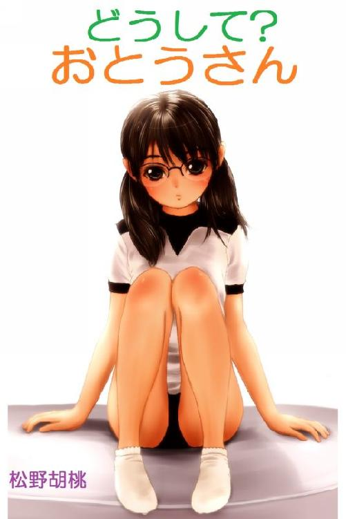
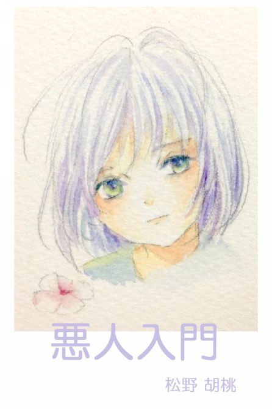

| 和果子たちのダディズ他３編 | |
| 松野胡桃 | |
| UNKNOWN (2016) | |
和果子たちのダディズ
作 松野 胡桃
絵 ひろみやも
目次
まえがき
《１》数菜の思いを渡すまで
《２》和菓子と和果子
《３》日曜日の次の日
《４》幸せになぁれ
《２８》撃てないはずよ！
《２９》メグの中からケイトを思い出して
《３０》確実な数式と結果を得ています
まえがき―――
わかこ たつみ かずな 同じ高校、同じクラブの三人。
わかこは父親に似て生真面目なの女の子。
かずなは人に頼らない父親に似ず、難しいことは慕う先輩に頼める子。
たつみは父親に似ているつもりだが、小心で「好きだ」と言えない。
三人とそれぞれの父たちの人生の一コマ。
《１》数菜の思いを渡すまで
やはり、一発で程良い炎を上げてくれた。たった百円のライターが、それだからこそ感銘を与えてくれる。藤倉は公園の灰皿脇でタバコを吸い始めた。部屋よりも庭よりも、ここがいいと思っていた。公園には他所の人が居るからだ。大人も子供も遠慮無く居る。人が共存している空間が藤倉は好きだった。
時々来る商店の店主が、同じ灰皿脇でタバコを出したは良いが、衣服を触ってライターを探している。「あれぇ」と、結局、無かったようだ。
「社長さん、火、頂けませんか」
「ああ」と、中の液体が全く見えなくなった百円ライターを差し出し「さて、点きますかねぇ」と言う。
しかし、そのライターは店主がカチッと音を立てると、一発で程良い炎を上げてくれた。いったい、いつまで一発で点いてくれるのだろうかと思いながら、藤倉は最後の最後まで使ったら、幸運を失わないように暫くは神棚に置いておこうとすら考えていた。工業製品で全てが同じ仕様、同じ性能で作られているはずのものから、こんなにも優秀な一つにめぐりあったのだ。
短いタバコタイムが終わると、書斎に戻って、仕事の続きにかかる。熊谷特紛株式会社は特殊な小麦粉や高級な餅粉などを扱っている。地元で有名な和菓子メーカー、川越屋を創り、事業も成功している。
書斎に入ると、若いメイドが掃除機を掛けていた。
「すみません、もう少し、遅くに帰られると思いましたので」
「タバコ一本、根元まで吸ってきただけだ」と、藤倉はデスクに着く。「いいよ、続けてくれ」
「いえ、やめておきます。埃もありませんし。また、外出される折には声を掛けてください」と、彼女は掃除機をかかえて部屋を出ようとする。
「そうだ、外出するよ。二時になったら内海君が来る」
「統括部長様ですね」
「そのあと、川越屋の広瀬さんに会って、お得意様試食会の説明を聞く。近々、我々も番外で試食させてもらうから、モナカ君も行こう」
「どうぞ、モナと呼んでください」これを何度も言った萌奈香だ。
「和菓子に因んだ良い名だ。気に入ってるんだがね」
「因んでません」
「そのときは君も一緒に来給え。川越屋本社に行こう」
その頃は和菓子ならぬ和果子(わかこ)は当然、生きていた。高校２年、人生で一番ゆるい時期の終焉である。
和果子は演劇部に所属していた。今でこそ十二名のクラブだが、四十年前は五十名で地区大会優勝もした伝統あるクラブだ。この衰退は全校的な、いや、全国的な傾向であった。伝統のあった音楽部は全盛期、多額の部費を勝ち取り、オーケストラを編成する勢いだったが、吹奏楽、アンサンブルと変貌し、この度、軽音部との併合問題に進展した。ましてや棋道部、煎茶部は廃止が決定していた。文芸部は演劇部が吸収するか読書愛好会、新聞部と併合するかというところまで衰退した。
「予算予備会議の結果です」と、演劇部室に揃った銘々の前に立って津川部長が話し始めた。
和果子は次期部長が決まっていた。次期副部長は和果子が藤倉達己を推薦し、部員の承認は得られていた。現部長は予算会議で予算を獲得した時点でお役御免となるのだ。それもあって、和果子は最前席で部長の話を聞いた。
「４名未満問題、音楽部問題、文芸部問題とありましたが、生徒会案が可決されました。来年から部費の割り当ては学生数の減少と共にかなり少なくなりますが、それを承知で、部の最少人数を４名から３名に変更します。三六の部活を学校は存続することになりました」
周囲は安堵と言える声を上げた。それでいいのだと言うおおかたの声だ。
「これで、我々演劇部の文芸部問題は解決しました。他所の部が併合することはありません。人数は減少し、予算は減ります。それで良かったのよね」
「演劇に興味ない奴らが入ってくる意味ないからな。併合しても文芸部が無くなるのには違いない」と、三年の男子が言う。
「文芸部の創作を演劇部が実演するという構図が職員会議の併合案になったんだけど、これに賛成だった新薙(あらなぎ)さんはどう？」と、部長が和果子に振る。
「アマチュアの作品をアマチュアが演じるというのは刺激し合えると思いました」と、和果子は答える。「でも、反面、私たちはしっかりとしたシナリオを元にプロとの違いを感じながら演じたいとも思っています。正直、評価が怖いんですよね、私たち。面白くないとなったときに、本がまずいのか演者が下手なのか、そういうデリケートな部分を心のどこかで嫌っていたりします」
「和果ちゃんはシナリオを担当してるだけあって、気付かせてくれるものがあるわね」と、部長。
「私は」と和果子。「シナリオを部員用に改ざんして、面白さが損なわれることばかり気にしてましたから。だから、オリジナルとなると、すごく怖いです」
「私は和果ちゃんにいっぱい助けてもらって、演出させてもらって楽しかった。部長を引き継いだら、あなたは演出も脚本もすることになる。大変よ」
「脚本は......かずなに手伝ってもらうから」と、吉野数菜を見ると、彼女も見返して、厳かに首を縦に振る。
帰り道、その日は二年生三人で学校を出た。四人だったり、最近では数菜が一緒だったりしたが、ともかく、その日は三人だった。一人はバス停が近づくと、そちらへ別れ、暫し藤倉達己と二人になった和果子だ。しかし、達己は近辺に住んでいて、駅に着く前に別れてしまう。
道の傍らにつっ立っている老人が居る。
「今日は見返り爺さんが居る」と、和果子。
「見るな見るな」と、達己。
二人が通り過ぎてしばらくすると、和果子が振り返る。と、老人もじっと見ている。「見てる」と、向き直る。
「よっぽど女子高生が見ていたいんだろ」
「別にいいけど、いろいろ想像されてたりしたら嫌よ」
「色々って......。文芸部、助かってよかったよ。これで演劇部に変なのが入ってこないで済むし」と、達己。
「変なのっていうのは失礼でしょ。うちは難民受け入れ歓迎の態度よ」
「いやいや、人間が変だってのじゃない。文芸部が入ると、演劇部文芸班なんてことになって別行動を取ると思った。その時は、演劇部にとって変なのだよ」
「そうね。よかったじゃない。今まで通り変わりないし」
「俺、和果子が副部長を任命したこと、ちゃんと受け止めてるから。三年生が五人卒業して一年生が入ってくれなければ、いきなり七人。そんなんじゃ演出の腕が振るえないだろ。文化祭には希望の人材を臨時でも引っ張るからな、任せてくれよ。和果子の創る劇が見たいんだ。もちろん、役者としても頑張るしな」
「へえーっ、頼もしいこと」
和果子が達己と別れたら百メートル強で駅につく。が、すぐに、見返り爺さんに続く名物、天才子役に遭遇した。いつものように犬を連れて歩いてる。この幼子は突然、「だめよ」と言ったりする。何か手振りをすることもある。相手は犬ではない。自分の世界に入り込んで、空中に向かって発言している様子が劇の練習に似ていて、天才子役と部長が名付けた。
「そんなこと、私、知らない」
和果子はフッと、笑って、どんな役になりきってるのだろうなどと思った。
駅に着くと、そこには吉野数菜が待っていた。ちゃんと、駅口で待っていたのだ。
「よかった、新薙先輩だけだ」と、言うと、澄まして視線を落とす。
数菜は最近、シナリオをクラブ用に編集する手伝いを申し出た。和果子がほとんどの作業をしていたが、逆に、犯しがたい聖域化し始めていたかもしれない。部長ですら本へのダメ出しはしなくなっていた。肩の荷に気付かないでいたことが、その申し出でフッと楽になった気がしたものだ。
「待ってたの？だったら、一緒に帰れば良かったのに」
「二年生グルーブに混じるのは、ちょっと」
「垣根を感じてるんだ」
「新薙先輩は別です。別だから......」と、俯く。
「どうした！元気ないぞ！助手がそんなんじゃ頼りにできない。......数菜は演劇部の後輩じゃなくて私の後輩だと思ってる」
「あ、いいこと聞いた」と、顔を上げたかと思うと、俯く。「クラブやめても先輩の後輩で居られるんですね」
「え？」と、和果子も笑顔を失う。
「決心しました。今日、先輩以外、誰にも話せないこと言います」
和果子は数菜の手を引いて改札を入ると、プラットホームの隅へ歩いてゆく。
「何を言うために待ってたの？」と言うと、和果子はため息をこぼして「脚本、手伝ってくれるんじゃなかったの？」と言う。
「やります。やらせてください。演劇部に居なくったって、先輩の手伝いは出来ます」
「でも、それではね......」
「今日、文芸部が続くってわかりました。入学してすぐに、文芸部の人が......中学で文芸部だった私の情報がまわってて、勧誘されました。でも、私はこの学校の演劇部のスタッフでありたいと思ってたし、ドラマとか脚本もすごく興味があって、あちらをお断りしました。でも、少し前に、また、私は勧誘されました。事は深刻で、演劇部なのはわかってるけど、文芸部を消滅から救って欲しいということでした」
「だったら、消滅しないってわかったし、あなたが移る必要はないでしょ」
「私には、はっきりと逃げ場が出来ました。消えるかもしれないところには逃げられないでしょ」
「ん......全然わからない、何言ってるの？」
「私は」と、うつむくと、小さく深呼吸している。
「ゆっくり。何を言われても受け止めるから」
数菜は頷くと、顔を上げて呼吸を整える。「私はもう、どうしようもなく......ほんとにもう、どうしたらいいのか。私は、藤倉先輩が好きです」
「え......そうだったの。藤倉君かぁ......。まぁ、そんな感じしてたかな」
「わかっちゃってましたか」
「はっきりとはね。言われてみれば、目が違うもの、彼を見るときの。で、それで演劇部に居られないの？」
「思いを投げて、砕けるなら砕けます。そのときは、砕かれた私の破片は散らかって、演劇部の必要としない塵になります」
「そう、詩的に言われても......。つまり亡骸のように転がってるだけの存在になるってこと？」
「生々しいです」
「どうやって思いを投げるの？」
「思いは重いです、私には」
「ダジャレ？」
「だから」と、数菜はカバンを開けると、飾り気のない青い封筒を取り出す。「ここに、手紙を書きました。月並みっていうか、事務的にイエスかノーを問う文です」
「そうなの。その重いものを投げるのは力持ちの私ってわけ？」
「先輩しか居ません。三年の先輩も何でも相談してねって言ってくれるんだけど、相談できるのは新薙先輩だけです、お願いします」
「見込まれた。どうして？光栄にも私が御遣いに選ばれたのかしら」
「先輩のシナリオには感心させられます。だから、頼るべき人と見込ませてもらいました。すみません、面倒かけます」と、数菜は頭を下げる。
「ん......できれば、あなたを演劇部に留めたい私の気持ち汲んでほしい。今のままで彼からの自然な答えに、あなたの勝算はあるの？彼、そうだったのか、じゃあいいよって答えると思う？あなたの思いは、あっさりとお断りされても覚悟できる程度のもの？」
「でも、告白というものは、正直に言って、天に任せる」
「ことじゃないわ。恋文というものは、何も感じていなかった人でさえ、この人を側に置きたいと思わせる力が必要でしょ、一世一代の名セリフぶつけなきゃ。勝算のない気持ちを投げる役目はゴメンよ」
「そんな......歯が浮いて抜けるような言葉、私には」
「ドラマのセリフと同じことよ。秘訣はね......ま、それはいいか」
「ひ、秘訣は？」
「重いと硬くなってしまうのよ。思いは重いかもしれないけど、それを素直に表現すると、相手に気持ちが伝わる前に、重荷に感じさせる。むしろ、軽く、私と一緒だと心も弾むって感じさせるのがポイント。さり気なく、深刻さは少し混ぜるのよ。深刻なものに対しては、彼も失礼のないように回答しようと思うもの。私が渡すときに数菜は真剣なんだと口添えするしね」
数菜は意気込むように深呼吸すると、「分かりました。書き直しを持ってきます」と言う。
新薙和果子は一軒家に、家族四人で住んでいた。父は消防士として活躍したが、今では職探しに苦労している有様だ。現在、五十歳だが、二年前、怪我をしたのだ。治療に半年以上もかかり、右足が全く動かない後遺症が残った。
消防活動中の人命救助中ならかっこ良かったのだが、休日の散歩中、暴走車にはねられたのだ。それなら、消防士でなかったらよかったのだ。なまじ、ベテランの知識と経験が災いしてしまった。
暴走車は軽乗用車だったが、人に向かったら野獣より怖い。
新薙は後方から凄まじいエンジン音が近付いて来るのが分かっていた。広い道で歩道もゆったりしていたし、車は快調に飛ばせるほど空いていた。ジョギングの男が抜いていった直後、振り返って確認したときにはその車はまさかの位置に居た。道路ではなく、歩道に乗って走っていた車は新薙に避ける暇を与えずに跳ね飛ばし、その前のジョギングの男をも跳ねて我に帰った様に道路に軌道修正して走り抜けて行った。
ジョギングの男は瀕死の重傷で、意識のあった新薙は右足がダメージを受けていたことを認識しつつも、なんとか気を失わずに応急処置をした。火災ビルから飛び降りる人を介抱したり、火事場から人を救出したりしてきたのだから、人の命をまず救う行為は当然だった。現場を何度も経験していたし、救急救命の知識もあった。しかし。
気がついたら、病院で治療を受けていた。事件のことを聴取に来た警察官に前の男が死亡したと聞いた。ありのままを話しているうちに、事故を起こした車の話より、新薙の話に移っていた。多少、医療行為に立ち入った事実が明白になり、しかも、勤務中でない時の行為は違反であり、さらに、携帯電話を持っていながら警察と医師に通報して処置を仰がなかったのも違反だ。救命士の資格は取っていなかったし、結局、自分も気を失ったため、事件の発覚が遅れた。救急車を呼んでないなど、問題が浮かび上がった。
『医療行為に夢中、救急車呼ばず』と、匿名で新聞にも出てしまった。
歯を食いしばるのが精一杯だった。話ができる状態じゃなかった。電話番号なんて思い出せないし、携帯のボタンを押すこともとてつもない時間を要しそうで怖かった。そして、目の前の人が死のうとしていた。
......何もせず、倒れたままにしてたら、新薙の方には何の問題もなかっただろう。
全治５ヶ月のはずが、半年以上かかって、右足不随、痛みはまだ取れない始末。事が事だけに分限という形で処分される運びになる前提での退職となった。幾らか少なめの退職金でも家のローンはそれで済ませた。新薙は荒れた。寡黙だが優しく真面目な男だったが、家族も手を焼くほど荒れた。そして、荒れる元気がなくなったと思うと、うつ病に入ってしまった。
これが悩みの種になった。うつ病では職探しもする気が起こらず、仕事をすること自体に自信が持てなかった。このまま貯金を食いつぶしてゆくわけにも行かず、病気としては回復していないまま、職探しを始めた。娘を大学に行かせる金、息子を目標の私立高校に行かせる金、そして、これ以上、貯金を崩さないための生活費が必要なのだ。
「仕事が落ち着くまでのお金を融通してもらおうと思う。安い金利で貸してくれるかもしれない。大丈夫だ、信用できる筋の紹介だ。ただ、人助けを趣味でやっている人ではないから、審査がある」
家族の前で新薙は言った。借金という言葉は別世界の言葉のように思った残りの三人は反対した。
和果子は「大学行かなくていいよ」とまで言う。借金を毛嫌いするあまりの言葉だった。
しかし、お金のない人は借金してでも大学に行くものだと父は言った。和果子の発言は本末転倒で、借金はチャンスをつかむ行為なのだと諭された。それに、紹介あってのことで、一般の貸金業者から借りるつもりはないと父は言う。
「内海君の関係なんだ。お前も彼の人柄は知っているだろう」と、父は母に言う。「気を遣ってくれたんだ。まぁ、相手に利がないんだから、駄目で元々と思ってくれと言うことだ」
父の大学時代からの友人を母は知っていた。頭が良く、仕事が出来るようだし、決して裏表のない気持ちの良い人という感じは持っていた。
吉野数菜の母は台所を占領して仕事に没頭している父の脇で、夕飯を作っていた。父は飴だの餡だのを少しずつ作っては和菓子の新作に没頭している。この没頭には給料が出ないのだが、和菓子技術部長に就任すべく努力の一環なのだ。株式会社川越屋の出す最近の新作和菓子に吉野が創ったものがかなり採用された。現在、社内で彼の右に出る職人は居ないにもかかわらず、肝心な和菓子技術部長は空席のままだ。一年前に山路部長が退職して、順当に吉野が後を継ぐと思いきや、吉野の肩書きは変更されなかった。
「今度はどうなの？」と、母は椀に煮物をよそっている。
「分からん」と、父はめんどくさそうに答える。
「材料も大分買ってるでしょ、支給してもらえないの？」
「勉強代まで出す会社は今時無いんだよ」
「川越屋のお菓子は高いでしょ、高いのは研究費が掛かってるからでしょ。一流レストランが高いのは、料理の質、サービス、それに精進代が入ってるからだと思う。それは常識でしょ。秋刀魚だけ使った料理が千円だったとしても頷けるのよ」
しかし、うるさそうな顔をするだけの吉野。
「薬なんてもっとよ」と、数菜が続く。「材料費から計算して、この薬は高いとネットで批判している人が居たけど、研究費や実験費が入ってるのよね」
「よくわかってるじゃない」と、母。
父は丸い羊羹のようなものの上に掛ける半透明の寒天風のものの色が気に入らないようで、何度もボールに何かの粉を入れては練っている。「研究費は会社がお客から取って、研究者に行かないなんて」
「誤解だ、給料をもらってる。職人としての評価の通りに。君は散髪費、通勤の靴代、そういった諸々の名目で貰わないと納得できないか？とにかく、静かにしてくれ。これは部長昇進で収入を拡大するための陰の努力と言うものだ。台所に居座ってるのが邪魔なのは承知の上だ。家族の理解と協力が、結局は家族を豊かにするんだ」
「はいはい、よそいましたからね、さめないうちに食べてください。遅くなると片付きません」
川越屋は熊谷特粉の傘下にある。地方の和菓子屋で有名所といえば人気のおみやげ商品を持っているところだろう。川越屋はそういうことではなく、純に和菓子を楽しみたい人が所望するお菓子メーカーだ。粉物の高級食材の会社が抱えるだけに高価でこだわりの商品が多い。百貨店と専用店舗で販売し、品にも因るが、店舗でレシピ通りに職人が作る。その職人の頂点が技術部長の座になるが、ここに来ればレシピの変更も新作和菓子も自らが生み出せる。
「山路さんが辞めることになった」と、熊谷特粉の内海統括部長が川越屋本社を訪れて言った一年前、吉野はすぐに昇格と期待した。
「定年は過ぎてらしたから、やはり、お疲れですか」
「ちがうよ。歳は歳だがね、味覚障害が出ていると、本人は言ってます。惜しいが、川越屋を守っての退陣です」
「味覚が......」
「両神（りょうかみ）を知っていますね」
「はい、山路さんの新作です。今年の６月の予定でした」
「コンセプトは受け継いでいるかね？」
「はい。ということは、私が受け継ぐということですか」
「予定通り、完成を期待すると広瀬社長が言ってます。それからうちの社長は技術部長の件はそれらの出来によると......」
「はぁ、厳しい試験があるわけですか」
吉野はお菓子でも料理でも、およそ、建築でも電化製品でも、人が創作するものには魂が宿ると信じている。観念的なものが実態に優先して存在し、実態が形を見せたら、そこに精神が宿るのだ。だから、ピアニストの心が演奏に出てしまうことの恐ろしさを、物を創る人間は知っておく必要がある。
「胡桃は味に主張がなくて、食感はある。だけど、決して固い歯ざわり
ではないし、じゃまにならない程度に柔らかくして細かく散りばめればいいんじゃない」と、数菜は父に言ったことがある。ただ見ているだけでは邪魔だと言われて、思ったことを言ったまでだ。
「胡桃を柔らかくするための手間、胡桃自体、すでに予算オーバーだ。四百円の饅頭を四百円掛けて作るわけには行かんだろう。期待していないが、何のアドバイスもくれないなら目障りなだけだ。集中して戦ってる最中だ」
「何よ、何がどれだけお金がかかるか知らないわよ」
「あなた」と、母が援護する。「食後のファミリータイムを自ら断ち切るようなことはやめてください。数菜は関心を持ちたいのよ。そもそも、ダイニングキッチンて言うのは――」
吉野は煩そうに短く深くため息をつく。「役に立つことを言ってくれれば話しになるんだがね、今は邪魔にしかなってないだろう。僕の部屋にキッチンがあればこもっているところだ。協力して欲しい」
「あなたのために他の人は部屋にこもれって言われてもねぇ」と、母。
「家族だからこそ協力しろ」と、数菜に向く。「お前は演劇部だな。演劇はつまり、舞台を創り上げると言うことだ。役者の心がけは何だ？」
「え？も、もちろん、役に成り切ることだと思う」
「舞台に出てるのはお前じゃない。演じられている人物だけが観客の目に見える必要がある」
「うん、そう思う」
「しかし、それは当然なんだよ。演劇とは役を演じるんだ。だから、心掛けることは役になり切ることじゃない。役になり切るために何を心がけるかということ。では、役者の心がけは何だ？」
「え......っと」数菜は口ごもる。
「そういうことを、話してくれるんなら、邪魔じゃない、歓迎だ。菓子作りの心がけに適用できるかもしれない話が娘から聞けるなんて嬉しい」
「うーん...」数菜は大人しくなるしかなかった。父は時々こういうお菓子とは関係なさそうな話を聞きたがる。最近では帰宅してからずっと考え事をしていることもある。決まって行き詰まって、外出するが、そこいらを歩きまわるか、喫茶店に場所を移すだけだ。
そのことに的確に答えてくれたのは和果子だった。和果子は封筒を持って来た数菜を廊下に連れだした。
「一応、読むわよ、渡す前に」
「そ、それって、勘弁して下さい」
「でも、変なこと書いて引かれたら意味ないし」
「先輩の添削は丁重にお断りします。でないと先輩のラブレター見せてもらうから」
「いいわよ。手元にはないけど、何回でも書けるわ」
「えっと......敵いませんね。でも、糊付けは破かないで」
「わかった。伝書鳩になったげる。数菜、本気よって、口添えしておく」
「お願いします。部活終わったら、さっさと帰りますね。――本当はお母さんにもこういう事って相談したいけど、きっと、馬鹿な事やってないで勉強しなさいとか言わないと思うけど、やっぱり......ね。台所にお父さんが陣取って仕事してたんでは、絶対、切り出せないし」
数菜は父の現状を話した。話題を封筒から逸らしたかっただけだ。
「大変ね、お父さんに台所を陣取られるのも」と、和果子は廊下の窓から外を眺めた。「男が打ち込める仕事があるって素敵じゃない。仕事をしたくてもできない、させてもらえない人もいるんだし」と、和果子が自分の父を思っての事だとは数菜には分からない。
「高級料亭の料理人になると、お料理教室で教わる必要はないわ。でも何も教わる必要がないわけじゃなくて、教えてくれる人が居ないんでしょうね。自分で見つけることは難しいし、何かを見つけたつもりでも、よく考えると、何でもないことだったり。文芸肌の人には分かるんじゃない？」
「あ」と、思った。父は単に、舞台の原作を書くにあたって、テーマがぼやけたり物語の焦点が定まらないことなどの不満を克服しようともがいているときの自分と同じなのだと思った。自分はともかく、父は高級和菓子職人なのだろう。ある意味、ヒントやひらめきに飢えているのだ。父に対して鋭い一言が言えれば、役に立てるのだろうが。
「先輩、役者の心がけって......偉そうな質問をしてしまいますが、心がけって何ですか？父は私から聞きたいって言ったけど、答えられなくて......」
「情報を食べられるだけ食べて消化するの。自分の中に人格を作らなきゃ演じられないでしょ、脚本、原作、演出のすべてが持っている情報を取り込むのが理想だけど、難しいから、私が脚色したものは私の口から演者に説明してるでしょ」
「そういえば、ちゃんと説明されてます」
「あとは、体調を整えておくこと。役者にとって客席はあっても、役にとってはないということを知る必要がある。立ち位置や声の大きさなど、不自然と自然の間を納得できる埋め方をすること。役が寝ぼけた役でも眠ってても、役者は頭の回転を良くしておかなきゃね。甘くて消化のいいものを食べておくと自信も湧くわ。イーッパイ有るわよ、私はシロートだから、シロートっぽい心掛けになるけど。でもね、心がけるべきは自分では出来栄えが分からないと知ること」
「先輩は私とは違いますね。一学年上なだけなのに。一生、付いて行きます」
「えーっ、まさか、今の封筒、私宛じゃないよね」
そして、部活後の帰り道、早々に学校を出た数菜の後をのろのろと帰り支度をして和果子等二年生グループはバラバラと出てゆく。和果子はわざとゆっくりと行動し、さり気なく達己以外が帰るのを待った。鞄の中に青一色の封筒を確認して、ここなら、さっと取り出せると思った。が、今更、宛名の間違いに気がついた。『達巳先輩』と、書いてある。
『いや、達己君だし。肝心な所で何やってんのよもう......』
仕方ない。和果子は「ちょっと相談があるから、待ってて」と、達己に言うと、急いで出る。無人の教室に戻ると、砂消しゴムで突き抜けた棒を少しでも切ろうとした。しかし、普段使いもしない万年筆で書かれた文字は染み付いていた。やれやれ、数菜の名文の晴れ舞台だ、たまたま持っていた白い洋封筒に『達己先輩』と、オリジナルに似せて書き、中味を入れ替えた。読みたいとは思わなかった。真剣な数菜の態度が和果子を真摯にさせた。
結局、その日は藤倉達己と木村友香と三人の二年生で学校を出た。あまりにもいつもの風景に達己が『何か話すことがあるんじゃなかったの？』と、切り出すが、和果子は「うん」と応じただけだ。そして、友香と他愛もない話、「あ、天才子役だ」などしている。
犬を連れたその子は突然、壁に向かって手を突き放すように振り、「あっちいけ！」と言う。
和果子も友香も声を出さずにクククと笑って通る。
「あれくらいのオーバーアクションが舞台には必要なのよ、って津川部長が言ってた」と、和果子。「テレビドラマの真似じゃまったく伝わらないそうよ」
「そういえば、津川先輩はあんな子だったらしい」
「あ、あるある」と、笑い合った。
果たして、友香はいつものバス停に行かず、電車で兄の誕生日プレゼントを買いにゆくと明した。
やがて駅が近くなると、達己は「じゃあな」と、帰路に別れる。
二人の女子はバイバイと、駅に向いたが、「ちょっと、言い忘れ。先、行ってて」と、和果子が彼の向かった道へ戻る。友香は別段、気にしたというわけでもないが、とぼとぼと、和果子を追った。
和果子が曲がったところまで来ると、達己の入った細道、その先で二人が向かい合っているのが見えた。「私に聞かれたくないことかな？」と、つぶやいてみたものの、和果子が慌ただしく鞄から何か取り出している。封筒だ。何か言ってると思ったら、両手で恭しく持つと、彼に差し出して頭を下げている。ラブレター、手渡し現場だ、そんな感じに見えた。凝視するより、むしろ、さっさと駅に向かって歩き始める友香だった。
「和果姫、ただの友達から脱却するには、言葉ではなく、したためられたものの力に縋るのが良いのじゃな」と、友香は独り言。振り返ったが、まだ和果子は見えない。この際、さっさと駅に行こう。「なかなか手渡しなんてできないものよ。さすが藤倉とは既に脈ありと踏んでたな」
ところが、駅には早々に下校したはずの数菜が居た。
「あれ？」
「木村先輩？」
電車が入ってくると、友香はあわてて切符を買い、「あれに乗るんでしょ」と、急かす。
「新薙先輩を待ってたんですけど」と、数菜は列車に乗ってから言った。
「かなぁと思ってた」
「え？」
「吉野さん、和果子さんが好きみたいね」
「え、ええ。先輩のシナリオ、好きですから」
「でも、帰りを待つんなら、学校から一緒に帰ればいいのに」
「二年生グループに一年一人は......」
「わからないでもないけど、そういうのは......。ねえ、吉野は藤倉、好きでしょ」
「あ、あの、ええ？......誰に聞いたんですか？」
「こらこら、私の目は節穴か？」『でも、達己くんに和果子が乗り出したら、ライバル現る......いいえ、あなたでは歯がたたない。それでも、やっぱり、あなたには和果子を好きでいて欲しい......』
木村友香がさっさと駅に向かう頃、封筒をもらった達己は神妙に固まっていた。数菜は真剣だと言われるまでもなく、冗談でこんなものを書く子ではない。
「素直に喜んではくれないようね」と、和果子は小さくため息。「ちゃんと、答えてあげて。それまでは部室に来ないつもりよ」
「保留、してもいいのかな」
「中を読んで、素直な感想を返してくれたらいいのよ。何を返されるかに因っては、彼女、文芸部に移籍する」
達己は深いため息をつくと「とにかく、読ませてもらう」と言う。
「じゃあ、私にでも、直接でも、気持ちを言って。あまり待たせないでね。――バイバイ」
「新薙、全然違う話なんだけど」
「ん？」
「明日、クラブには行かないんだけど」
「そう言ってたね、何か用事があるんでしょ」
「明日、一緒に行って欲しいとこがあるんだ」
どういう人物かを見極めるとき、他人の評価ではなく、自分の目しか信じない。そういう人だと、萌奈香は知っていた。本日のお客様にもすぐには会われず、応接間で待っている様を書斎で観察するのだ。
萌奈香は灰皿を綺麗にせず、吸殻を残したまま客を迎える準備をした。どんな人を迎えるにしても、生花を書棚のスペースにあしらうのが社長流だ。安くても小さい花々が愛らしい背の低い一輪を差した花瓶を置くと、応接間を出て書斎をノックした。応答があると、「お掃除終わりました」と、声をかける。
藤倉はやはりパソコンの画面に隠しカメラで撮っている応接間の画像を見ていた。
「モナカ君、よく、斉藤さんとこに雇われることになったね」
「平山、若しくはモナと呼んでくださいませ。それで、何かお気に召さないことがありましたか？」
「灰皿だよ」
「はい、綺麗な灰皿には灰が落とせない人も居ますし。あえてタバコを吸う人だと聞かされたからには、御吸いになるところをご覧になりたいかと思いましたが」
「んん？」と、藤倉は振り返って若いメイドを見ると、フッと、笑う。「なるほど、君は面白いなぁ」
「私は斎藤様のお嬢さまのお世話をすることで採用いただいたはずですが、どうして一ヶ月もこの家でお勤めするのか、分かりません」
「秘書的な事もできる経験の場にしたいのだろう。斎藤さんのわがままだがね。採用試験のつもりで私の役に立ってくれ」
「そう思って勤めさせていただきます。お嬢様とは扱い方が違いすぎると思いますけど」
「それはご期待に添えませんで。あ、やはり、モナカと呼ぶよ。いかにも和菓子にちなんでるじゃないか」
「私はサイチュウではありません」と、ドアを締める。萌奈香はキッチンに向かうと、紅茶の準備を始めた。もちろん、早すぎる。客が来て、五分は藤倉は面会しない。お茶はその後になるからだ。
新薙は自然体で誠実さを重んじていればいいと思った。そもそも、内海君の話では、その人はなかなか人を信用しないから、基本的には駄目で元々らしい。万一のことがあるとすぐに破綻する家計を落ち着かせて、うつ病を物ともせず仕事に打ち込んで経済的にも、家長としても挽回せねばならない。
萌奈香が通したのは掃除された応接室だ。新薙はソファに掛けて落ち着くためにも周囲を観察した。接客応対のためだけに作られた部屋はシンプルでよく片付いていた。テレビもビデオも設備されているが、予備電源も入っていない。シャンデリアが似合いそうな部屋には天井にへばりついた照明がなんとも冷たく味気なく思え、ビジネス志向が伺える。だから書棚の一輪は心をなごませる。
部屋に通した後、萌奈香はすぐに入ってきて、「社長は五、六分ほど遅れますので」と、言って、何気なくライターを灰皿に乗せると、出て行った。
藤倉は書斎で新薙の様子を見ていた。落ち着きなく、部屋を見回している。かと思えば、視線は天井で、右手で左手を揉んだり右が揉まれたりしている。三分以上でも、タバコを吸う様子はない。たばこを持ってなかったかと思った頃、おもむろにポケットからタバコを出して、目前のライターで点火、吸い始める。藤倉が応接に行こうと決めていた六分はそれからすぐに来た。
藤倉が応接に入ると、新薙はまだ三分の二もあるタバコをもみ消して、しかも、もはや吸えないほど折り壊してしまった。
「お世話になります」と、新薙が言う。
「それは早いですよ、それが出来るかどうかは少しだけ時間をいただかないと」藤倉は向いに掛ける。
「事情は聞かれていると思いますが、私は――」
「聞いてます。事情はまぁ、色々です。子供、家族を抱えての経済的な不安は......少々蓄えがあっても、拭いたいものです。内海に打ち明けることも、辛いと思いますが。少々、臆病になっておられるように感じます。明日の糧がままならないという状況でもないのですし......」
「それでは遅い。万一の事態にうろたえることになります。ええ、確かに仰るとおり...」
「臆病は無理も無いですよ。恐怖というものは人それぞれです。私のほうがもっと臆病だとも言えます。会社がおおきくなれば恐怖が拭えるかと言えば、どうだかね......」
「内海には」と、小さく笑うと、「ダメ元でお願いしろと言われましたが、ダメでは困ります」と言って、椅子の脇に立つと、床に正座する。
「新薙さん」
「お伝えした額を」と、言うと、上体を倒して両手を付く。「お願いします」
「下座は困ります。暴力ですよ」
「僕にできることをするだけだ。通じないとはわかっていても、するべきことをしないで帰るわけにはゆきません」
藤倉は一息つくと、立ち上がる。「やれやれ、出ませんか」と、扉へ向かう。
新薙が付いていったところは、表にある広い児童公園だった。ほとんどが地面で、鞠を投げて遊ぶ女の子が数人居る。手入れの行き届いてない藤棚の下には灰皿があった。
「私の喫煙場所です」と、藤倉は少女らを見る。それで、新薙も見る。
「たくさんの人を救助したんですか？」と、藤倉。
「いいえ、若い頃に、おばあさんと、子供と、まぁ、在勤中、この手で連れ出したのは二人だけです」
「危険な場所に入るときは、家族の面影が脳裏を掠めるのでしょうね」
「いいえ、それはないですね」
「ほう？」
「人が居るか確認する、居たらそのひとを救助する。そこで臆病になったら、自分が危険なんですよ。でも......。仕事が終わってから、無事でよかったとしみじみ思います。時には、自分がさっきしたことを思い出すのも怖いことがあります」
藤倉はタバコを出すと、一本取り、新薙にも勧める。しかし、新薙は自分のものをポケットから出した。藤倉は優秀な百円ライターで火をつける。まったく液が見えないのに一発着火だ。
「すみません、ライターがないんです」と、新薙が言うと、藤倉はそのライターを手渡す。
「もう一滴もないでしょう。点かないかもしれない」
新薙がパチッと音を立てるも、火は点かなかった。「ああ、もう寿命ですか」
「寿命か」と、言いつつ、藤倉は初めて発火しなかったライターの寿命と新薙の不運を重ねて見た。
新薙は二度パチパチとやると、小さく炎が見えた。タバコに火を点けると、「要りませんね。ご苦労さん」と、言って、ゴミカゴに歩み寄ると、コンクリートの段を使って器用に踏み壊して投げ入れる。
藤倉は『あ』と、思わず言いそうになった。点かない使い捨てライターは捨てられる。その手間をとったのだと思ったが、神棚に上げようと思ったものが壊されたというのはショックだった。
「どうして、医療行為、救出行為をしたんですか？」
「はぁ......したかったから、では、わがままでしょうか」
「命を助けて、正直、名を上げたかったとか？」
「......そんな風に考えるのは、何というか、目からウロコと言うか......」
「許されないことをしているかもしれない、そう考えるべきだったと思います。違法行為、間違った行為は、あなたの経済に大きな影響があり得ると考えるべきです。非番での救助は違法と分かっていれば、家族のことなど、全体から考えて、したいからする、的なことは慎むべきです。そういうあぶなっかしいところが、結局、あなたを豊かにしない......そんな構図があるのかもしれないというのが、率直な感想です」
新薙和果子は携帯電話を持っていない。そういうものの出費は慎むべきだと思っている。友達との電話連絡は家にある据付電話ということになる。和果子は数菜の電話番号を知らないし、数菜も知らないから掛けてこられないはずだ。だから、例の手紙を渡した時の様子は話せていない。そんな情報は特に意味が無いが、少なくとも迷惑そうではなかったくらいは言ってあげられるのだ。しかし、翌日の休憩時間はことごとく小用で一年生の教室まで向かう余裕がなかった。数菜も和果子をたずねなかった。
放課後すぐに、和果子は隣の同じ二年生の教室を覗いて木村友香を引っ張りだした。
「ごめんなさい、私、今日は行く所があるの。部長に言っといて。それから、吉野が私を探すかもしれないけど、今日は早く帰ったって言って」
「あれれ、藤倉君もそんな事言ってた。なんかもう、慌てて帰っちゃったわよ」
「そ、そうなの。実は、藤倉の用事と同じ。頼まれ事があって」
和果子はその日、藤倉の家を訪問することになっていた。と、言うのも、お菓子の試食会に参加して欲しいと頼まれたのだ。和果子も慌ただしく、友香から離れて行く。
友香はため息をついて、「やっぱりそういうことなんだ」と、つぶやく。
友香がいつものように部室へ来ると、吉野数菜は居なかった。意外にも部長は藤倉からすでに和果子と共に欠席することを聞いていた。それにしても遅いと、窓辺に寄ると、数菜は外にいた。しかも、部室を見ていない。木に寄りかかって足の爪先あたりをじっと見ている。友香は走り出た。
「何してるの？」と、声をかけると、数菜は向き直る。
「新薙先輩は来てませんか？」
「今日はね、急用みたいで、出てったわよ。私、あなたにそれを伝えるように言われてたけど、来ないから......」
「あ、そうなんですか」と、何か心配そうに視線を外す。
「さ、行きましょ」
「今日は、私も帰ります」
「どうして？藤倉君が居ないと張り合いがない？」
「居ないって」
「彼も用事でね、さっさと帰ったわよ」
「そうですか......。いえ、部活します」
「ねぇ、藤倉君には和果子が好意を持ってるの。友達以上のネ」
「え、えぇそんなことはないです」
「あなたにどうしてそんなことが言えるの？」
「だって......ありえないです。なぜ分かるかは......」と、数菜は書き直しを指示した和果子を思った。
「見たの。和果子が恥ずかしげに封筒を渡すとこ」
「それは......」
「なんでもないものなら、私のいる前で渡せばいいのに、わざわざ引き返して渡してた。藤倉君もね、困った顔したように見えたけど」
「え？」
「あれは演技ね。だって、私、和果子が彼を好きだとは思ってなかった。そう、私の目はまだまだ節穴だった。でも、藤倉君は和果子が好きよ。だから、びっくりしたんじゃないかしら」
「ええ？」
「今ごろ嬉しくて......あ、二人仲良く......はありえないか。まさか部活サボってまでデイトする軟派じゃないわね和果子は」
「ありえないです」
「硬派だもんね」
「じゃなくて、新薙先輩が......」
「見たのよ、白い封筒だけど横型よね、可愛くないけど和果子らしいと言うか」
数菜はこわばった顔を向けたかと思うと、「今日は帰ります」と、小走りに離れてゆく。
「言わなきゃよかったのかな」と、呟くと、友香は歩いて部室に戻る。「実らない儚い夢こそ悲劇かな」
確かに、数菜のことは気になる和果子だった。半ば強引な達己の願いを受け入れたものの、明日と明後日の学校が休みであることもあって、今日にも返事をして欲しかった。良い返事でも、希望のある返事でも、安楽死させる返事でも、返事を決めるのは達己だ。和果子は半殺しをやめろと言わなければならない。君の前で裸になった少女を包むも追い返すも自由だ。ただ、放置はいけない、と。
本当に達己は先に帰っていた。一年生の時、一度グループでお邪魔したことがあるが、道を覚えていると思い込んでるようだ。まぁ、公園の向かいだから公園を発見すれば一周するまでには見つかる。
萌奈香は学校帰りの女子高生とわかる少女を玄関で迎えた。「達己さんのお友達ですね」
「はい、新薙和果子です。遅くなりましたか......」と、萌奈香に見とれていた。コスチュームがメイドを物語っていた。ほんとうに若いメイドさんて居るんだと思った。
「いいえ、どうぞ、ご案内します」
和果子が通されたのは応接室で、そこには小洒落た私服の達己が居た。通されるままに、一人掛けに座る。つい先日、そこに父が座ったとは知らない。
「もう着替えたの？」
「僕はね。君はそのままでいい」
「当たり前よ。ね、メイドさん雇ったの？」
「あれは、借り物っていうか、他所の人だよ。たまたまうちで研修してるんだ」
「お父さんの関係？」
「サイト製薬工業の社長か何かのお屋敷に勤めることになるらしい。あの......君はどう思う？その......手紙の内容だけど」
「何言ってるの、内容を知らない人に感想を求めてるの？」
「感想？...いや、そうじゃなくて」と、悩ましげにうつむいてしまう。
「何？どうしたのよ」
しかし、彼の姿勢は変わらない。
「無理しなくていいのよ。こういうことは八方美人というわけには行かないから。イエスかノーだけが答えでもないし。答えが自分でもわからないと言うのも答えだし」
「君はどう思うんだ？」
「また......」
「うまく行くのがいいと思っているのか、どうでもいいのか、うまく行ってほしくないとか」
「ほしくない？」と、和果子はちょっと考えて達己を見る。達己は見返して目が合うとうなだれる。
「そ、そうね、私は、結果として、いい返事をしてほしい。数菜はいい子よ。素直で慎ましやかで、でも、情熱があって......」
達己はため息をつくと、「わかった。月曜には返事をするよ」と言う。
藤倉、達己の父は忙しく入って来ると、出かけようと声をかけた。
ワゴン車の運転席に年配の男、助手席には藤倉、後ろに和果子、達己。その後ろに萌奈香が乗った。運転席の男を和果子はどこかで見たような気がしたが記憶の破片が反応しているだけで、その人を知っているのではないと思った。
「近くだからね。食べてもらうだけのことだから。我々一行は若手代表だ。まぁ、前列を除いては」と、藤倉の声は大きい。
「お菓子って何？」と、和果子は達己に。
「和菓子。お得意様を招いての試食会は別に開催されてるんだ。川越屋の社長が仕切ってね。僕らは非公式なのさ」
「ちゃんと感想を言ってくれそうな人を連れて来いって言ったら、君が引っ張られたんだよ」と、藤倉。「白羽の矢だか何だかが、当たってしまったのだから、ご協力お願いしますよ。で、彼女は演劇部の先輩か」
「違うよ。同学年だし。まぁ、部長になる人だけど。感性は鋭いと思ってるんだ」
「私みたいなどこの子かもわからない子に何をお願いされるのでしょう」
「達己の白羽の矢だ。これから少しだけ付き合ってほしい」と、藤倉。
「この子ね」と、達己。「和果子って言うんだ。和菓子から草冠を取っただけなんだ」
「おおお、すばらしい。今日は和菓子さんと最中さんの遭遇だ」
「私はサイチュウではありません」と、萌奈香。
そこは『川越屋本社』なるところで、小さいビルの一階に和菓子の店舗があった。和果子らが通されたのは、そのビルの三階の小さな会議室風の部屋だった。
「作った人は居ない、だから、大声でこれは食えないと言っても大丈夫だ」と、藤倉は和果子に言う。
「始めます」と、運転していた男、内海統括部長が入って席に着くと、店員風の若い女性がワゴンを押して来た。
各自に配られたのは、お茶と、透明感のあるゼリーのようなものだった。
「二品です。まず、一つ目は『春を想う』さくらんぼは春ではありませんので、むしろ、回想的な意味でしょうか」
「なんだ、聞いてないのか」と、内海
「以前、熊谷の社長様が、余計な情報は要らないと申されたとか」
「ほう」と、藤倉。「で、君がそう思ったんだね？つまり、回想」
「はい」と、彼女はお茶と、スプーンを配る。「専用の楊枝を作るとすればスプーン的なものがいいと吉野さんが仰いましたので」
女が部屋を出ると、「頂こう」の藤倉の声に、全員が食べ始める。
おぼろげな紫系の上に透明部分が広がるゼリーのような四角いものにさくらんぼが入っている。味気なさそうなさくらんぼのゼリー固めに見える。意外と透明部分は硬く、食べると、ほぼ羊羹に感じる。しっかりとした歯ざわりにちゃんと小豆を思わせる味。さらに、さくらんぼについては、はっとさせられる。外側、果肉、種までスプーンで切れる。
「参考価格は？」と、藤倉。
「４００円です」と、内海。
「うん......４６０円でもいい内容だな。ショートケーキ一つに対抗できる。どうかな？ワガシさんは」と、和果子を見る。
「そうですねぇ、大分損してるんじゃないかしら。ぱっと見にさくらんぼ入りゼリーです。そして、もしそうなら味が想像できちゃいますし、私はその上で美味しそうに見えませんでした。でも、食べてみると、これは羊羹が好きなら目先の違う羊羹として楽しいです。特に、さくらんぼが和菓子で作られた偽物だった時点で、なんて言うのか......楽しいです。洋菓子のようで和菓子に徹していますし」
「そうだね」と、達己。「さくらんぼの枝の部分までが作ったものだし、感心するね」
「透明に近い羊羹というのは」と、和果子は続ける。「涼しげで、暑くなってきた頃に、ふと、春の、桜の季節を思う......春を思うというネーミングは七月頃に食べるお菓子にぴったりだと思います。こんな感じの感想でいいでしょうか」
「うん、なかなか、感性がある人のようだ」と、藤倉。
「この、人によってまちまちの、方向の定まらないサーヴ、これは感心しません」と、萌菜香。「お菓子、器には位置が有ると思います。お湯呑のデザインにも見る方向があります。それから、スプーン、私のは水滴がひとつありました。洗いたてでも拭きとっておくべきです」
「まぁ、お客様がどんな器でどんな食べ方をするかはまちまちだ。君のサーヴで食べたらよかったかもな」と、藤倉。「それで、肝心のお菓子は？」
「七月というのは、さくらんぼの季節ということで、ここにあるのはそれに似せたものだから八月でも九月でも、今でも提供できますね」と、萌菜香。「小豆の濃厚な煮汁の比較的上澄みを使って作られたものだと思いますが、桜と春をさくらんぼを見て思うということで『春を想う』というよりはそもそも、味が春を思わせます。おそらく、桜の花びらの塩漬けを塩の代わりまたは一部に使っていて、春を想わずには居られないくらいの力のあるお菓子です」
「え、そうなんですか」と、和果子。「メイドさんてすごーい」
「恐縮です、お嬢様。――わからないほどの桜の香りで心に訴えるより、ここに桜の花びらをひとひら残して、わかりやすくしたほうが、さくらんぼゼリーに見えない、和風のお菓子であることと、高級感が醸し出せると思います」
「うーん、君は面白いなぁ。斎藤家が採用を決めるわけだ。お菓子の芸術としては高尚すぎるということだね」と、藤倉。
「ショートケーキに対抗できるが、食べてからですね」と、内海。「お嬢さんの言われる通り、損してますよ。むしろ、５百円で提供することで見た目とは違う、意味有りげな感じが伝わるでしょうか」
「しかし、５百円ではリピーターが付くか......。二個食べれば千円だ」
「逆に、参考価格の４百円というのは......それほど手軽に作られるんでしょうかねぇ、ある意味、工芸菓子的な感じもあるし、どの店舗の職人でも手軽に作られるのか......」
次に現れたのは『小ぶり甘夏』という鮮やかな黄色のミニチュアな甘夏だ。見た目は本物とそっくりとは行かないが、さわやかな甘さと酸味が誰にも想像できた。甘い豆の粉を組み合わせて作ってあるが、みかんの皮はちょっと硬くてさっくりと切れない。
「薄い生八橋みたいな膜ですね」と、和果子が言う。
「中の黄色い餡は思った通りって感じだし」と、達己は口に入れる。「うん、期待通りの味。さっきと違って、思った通りのお菓子になってる」
「これは」と、萌菜香。「甘夏ではなく、レモンとオレンジ系のエッセンスですね、香料もありますが、ほのかで自然です。こういうみかんとして成り立っているような、甘夏の真似ではないと思わせます。果肉にゼリー状のものが入っていますが、しっかりとしていて、歯ごたえが面白くて、日保ちもするのではないでしょうか。お家で食べるもよし、おみやげにもよし、安ければ、たくさん買ってもいいと私は思います」
「しかしね、これが安くないんだ。参考価格は三百円」と、内海。
「一つでは物足りない大きさだ」と、藤倉。「これこそ、単に型にはめて作るお菓子よりずっと手間がかかる。二百五十円でも四人分で千円か。モナカ君の言うとおり、歯ざわりもいいし、香りもいい。暑くなると水ようかんが売れるが、こういうのが売れて欲しいがね」
「作っている過程がわかれば、他の職人に意見が聞けると、広瀬社長は言ってましたが」
「前回も言ったはずだ、広瀬さんにも言った。山路さんを見習えと」
「両神......のつもりなんでしょうかね、さくらんぼの方は」
「山路さんの後を継いで作ったお菓子だというのか。『春を想う』というのが山路さんの作りたかった川越屋の定番なのか」
「いや、もう少し、真摯で重い......宗教的な......敬虔、とでも言いましょうか」
「何を考えて作ったのか誰か知っているのか？」
「誰も知りません。吉野は陰で努力するタイプです」
「それがいけないと、前にも言ってる。あの山路さんですら、若い職人に率直に意見を求めて活路を見出そうとしたんだ。陰で努力とは見えないとこでコソコソという意味ではない。そもそも、材料を持ち出す時点で社員が勘ぐることができるだろう」
「材料は持ち出してません。独自で買い込んでるようです」
「熊谷の製品を商社から買って新作を手がけたというのか」
「熊谷の原材料を仕入れて研究したようです。熊谷に加工法を要請することになるでしょう」
「うちはリアルタイムで要請に従う気概はある。いっしょに新しい材料を開発するいい機会だ」
和果子は「吉野って......数菜？」と、小声で達己に言う。
「そうだ」と、俯いて首を立てに振りながら言う。
「それじゃ、もっとうんと褒めとくべきだった」
「ちゃんとした意見感想以外はいらない」
「まぁ、会社思いなのね」
「前回の指摘事項だ！」と、藤倉は不機嫌になってきた。「一緒に研究したものを熊谷から、ちゃんと川越屋を通して買うくらいの気持ちがなけりゃ、周りも協力する気持ちが持てない。もちろん、川越屋は特別価格で流してやればいいんだ。陰でコソコソやって、成功はすべて自分の功績にしたいというやつは、成功してはいけない！」
「材料は安く仕入れたいでしょうし、この件と評価は切り離して......」
「そうは行かん。微々たるものでも川越屋から物を買って貢献する気概が重要なんだ。内海さんにも解らないか？吉野は本社の調理場を使わないで他の職人に使わせている」
「はい」
「自分が一番使いたいはずなんだ。なぜ使わないか？基本的な材料も使えない、場所も、水道代も、ガス代も電気代も使いたくないんだ。あいつはたったそれだけのプレッシャーから逃げてる。会社の設備を堂々と使って、傍に迷惑を掛けて協力を受けて、そうやって最高の職人が川越屋の代表作を生み出してゆく過程を皆が知る。やがて評価や売れ行きをみて、皆に讃えられる、職人は皆のおかげだと思う......それが会社だろう！」
「仰るとおりです。山路さんがそうしてたように、吉野君も見習うべきですね」
「水臭い奴のお菓子が他の職人より高く評価されてはいけない。気持ちという霊的なものが最後は力や出来栄えを左右するんだ。物を作ることは魂を分け与えることだからだ」と、藤倉は内海以外の者を見渡す。「つい、大きな声を出してしまった。よくあるだろう、最後の隠し味は愛情だってね。でも、本当にそれが入っているかどうかで評価が違うんだよ。湯呑の向きか......サーブした人の愛情の程度が知れるってわけだ。愛情はどこで人をいい気持ちにさせるかわからないものだ。計算はできない。だから、感謝の気持ちを持ってものづくりに取り組まなきゃいけないのさ」
「心はこもっているはずだと彼から聞いたことがあります」
「心はこもっているさ。およそ、すべての職人が心をこめているのだから、それなしでは競争に勝てない。材料と設備と機会と人に感謝する気持ちが、出来上がるものに込められなきゃいけないんだ。それでこそ、山路さんの作った、川越屋の一味違うお菓子を継承できる」
家の近所まで和果子は車を回してもらった。降りる寸前で、今更、和果子が新薙姓だと知った藤倉は彼女が降りると、内海に訪ねた。
「あの新薙氏の娘か？」
「新薙君には娘が居ます。小さい頃は見たこと有るはずなんですが......」
和果子は降りざま、達己の手を引いてもろとも降りた。
「今日はありがとう」と、達己が言い終わる前に、和果子が「ねぇ」と、言う。
「内海さんて埼京大学出身？」
「そうか......言いたいことはわかった。内海さんの大学なんて知らないけど、やっぱりな。うちに来た新薙と言う人は君の......」
「そうだったの。どうして！どうして融通してもらえなかったのか、あの調子で、何か気に入らないことがあったのか、知りたいの、教えて」
「知らないよ」
「だから、私にナイフ突きつけられて教えろと言われたって言って聞き出して」と、メモ帳に電話番号を書いて渡す。「土日中に答えなさいよ。さもないと演劇部から除名」
「何の権限だよ」と、メモを受け取る。
和果子は自分の父がどんな人かを、成長と共に分るようになってきたと思った。家族思いで真面目で明るい人だと思うからこそ、今の欝からの脱却が待ち遠しかった。どんな事でもいいから明るい材料が父を明るい父に戻してくれたらいいと思っていた。しかし、昨日の晩に内海という紹介者から今回の借金の話が断られたと言う、後ろ向きな情報をもらったようだ。藤倉社長ならなにかしっかりとした理由があるだろうと、俄然、聞かずには居られない和果子だった。
それは月曜日だ。きっとそうだと和果子は思った。何か根拠があるかと言われてもそんなことはどうでもいいとしか思えなかった。どうでもよくないことは何か、学校に登校しながら、学校に行くのではないイメージがあった。
電車から降りた気はしていないが、ともかく、数百メートルも歩けば学校の位置だった。クラスメートが居た。声をかけた。はずだ。「おはよう！」と、元気にも遜色はないと思った。しかし、後ろ姿の彼女はそのまま歩いていた。聞こえなかったのか？と、疑おうとしたが、そのまえに、声が出たのかどうか疑わしかった。誰も気がつくものは居ない。進んでいるつもりなのだが、後から後から学生が追い越してゆく。
でも、気がついたら、何とか教室に入っていた。和果子は椅子を引いただろうか、はじめから引かれていただろうか、そこに掛けた。先生が入ってきた。何か話している。国語の先生だ。いや、担任の先生だ。しかし、和果子には何を話しているのかよく聞こえない。よく聞こえないと思ったが、真剣に聞こうとして、むしろ、眠ってしまった。
担任の女教師は真剣な顔で入ってくると、睨むように見渡した。生徒たちは予定と違う担任の登場にむしろ静まり返った。
「現国じゃないよ」と、誰かが言い終わる前に、彼女は話した。
「新薙さんが、交通事故に遭いました」『え？』と、一瞬のうちに何人もが発した。「日曜日、お昼のことです。相手は居眠り運転。玄関から急いで飛び出したところに突っ込んできたそうです。それで......現在、危篤状態です」
和果子はこの奇妙な夢には意味があると分かっていたが、意味を思い出すのに時間がかかっていた。時間の感覚はない。しかし、放課後になったのはわかった。
『演劇部室......』そこへ向かうのが当たり前の行動だ。何かフワフワした感じで、全く進まないのに、ハッと気がつくと、部室に向かう廊下にちゃんと居た。
「全員はダメ」と、部長は部員に言った。「とりあえず私と木村さんだけで行ってみる」伝統ある演劇部では部長の言葉は絶対だ。和果子の病院へ向かうのは二人だけと言えば、他はついて行けない。
その二人が慌ただしく廊下を和果子に向かって歩いてくると、すれ違ってゆく。和果子にとっては本当に奇妙な夢だ。皆に無視されている、皆から見えていない状況だ。そうだ、きっと、『ここに居ないんだ』と、和果子は分かった気がした。
すぐ後から、部室ではなく、庭から廊下に顔を向けて和果子を見ている、いや、通り過ぎた部長を見ている数菜が居る。
「数菜」聞こえないのはわかっている。ここに居ないんだから。
「木村先輩」と、呼び止めている。「新薙先輩は今日はお休みですか？」
木村友香と部長は顔を見合わせる。「和果子は入院中よ。部室、行ってなさい」
数菜は結局、二人の後をつけて行く。「だめだめ」と、部長に言われようが、そのまま付いて行った。
和果子には言葉が聞こえていなかった。ただ、数菜を見てから、うずくまっていた。混迷に引きこまれたのだ。数菜、数菜、数菜......。
そうだ、急いでいたんだ、急いで行こうとしたんだ。急いで言わなきゃいけないことがあったんだ。達己に......達己......と、和果子はふらりと浮き上がって部室を目指した。が、そこには暗い顔の部員が各自、本読みをしていた。しかも、達己は居なかった。
数菜......。和果子は可愛い後輩を抱きしめたいと思った。そうしなければならないことは分かっていたが、その意味はわからない。ああ、わからない......。
いつのまにか和果子は下校していた。学校から駅に向かって歩いてるつもりだった。が、もう少し高いところを、もどかしい速さで移動しているだけに思えた。なぜか、足元を見る気にはならなかった。地に足が付いてないのが分かっていたからだ。
誰かが、見ていた。老人だ。ああ、見返り爺さん......思い出せた。が、見ていたわけではなかった。前を通っても全く気付かない。当然、目で追われることはない。やっぱり、私はここに居ない。そう思った途端に疲れはてて眠ってしまった。
病院のフロア受付で、思ったとおり、二人は壁にあたった。
「只今、ご面会はご遠慮いただいております」と、年配の看護師に言われると、もはやそれ以上は進めない。様態を訊いても、危険な状態と言われただけだ。危険には程があるだろう。命が危険なのか？どう危険なのか......二人はヤキモキして玄関から出た。二人、と言っても、実際はずっとついてきた数菜も一緒だ。
「だから、来ないでいいって言ったでしょ」と、部長は数菜に穏やかに言う。
三人は病院の庭のベンチに掛けてうなだれているしか無かった。こうしてる間に、危険が大きくなっているかもしれないし、回復に向かっているのかもしれない。掴みどころがなさすぎて、話す気にもなれない面々だった。
うなだれていると、近寄ってくる人影があった。数菜はさらに俯いてしまった。
「部長、来たんですか」と、言ったのは達己だった。
「君はいつ？」
「昼からです」
「早退したの。じゃあ、ずっとここに居るの？」
「昏睡状態だって聞いた。いつ、覚めるかわからないし......」
「そう、側に居たかったのよね」
それを聞くと、数菜は友香に顔を向けて、しょげるように俯く。
「ほら」と、友香は数菜に小声。「津川先輩の目も節穴ではない」
「私は帰るから。君たちも迷惑にならないように」と、部長は立ち上がる。
「僕も帰ります」と、達己は部長と共に離れてゆく。
友香と数菜は見送る。
「好きな人のそばにはずっと居たいはずなのよ。部長に図星、言われたからって、帰らなくても......。午後早退なんてなかなかやるじゃない」
数菜は彼らから白い病院に目を移す。
「記憶喪失になれば、なんて、思ってる？」
「え？」と、数菜は怖い顔を向ける。
「なにびっくりした顔、冗談よ。てか、私、動転しちゃって......ごめん」と、友香。
「木村先輩は知らないことがあります。――新薙先輩は私に、手紙を書きなおさせたんです。なぜ、そんな事させたのか......」
「？手紙......何のこと？」
二人は一時間ほど、そこらをうろついていたが、駄目で元々、何か変化があったか、訪ねるために入ってゆく。しかし、危険な状態で、面会謝絶、病室も当然、教えてもらえなかった。心配しているだけでも時間が経つのは早く、さらに一時間近くロビーに掛けていると、看護師が探しに来た。
「良くなったわけではないの。少しの間、何か話しかけてください。やや覚醒状態にあるので、言葉を受け付けるかもしれないの。ご両親が話しかけてるけど、お友達にもお願いします」
両親と弟がベッドから離れると、それは頭に包帯を巻かれて、酸素吸入器を付けられた事故の被害者だった。目を閉じ、じっとしていて、友香には熟睡に見えた。
「ゆっくり、大声を出さずに」と、看護師が言う。
友香は頷いて、和果子の側で跪く。
「和果姫、友香だよ、分かってる？来てあげたよ、感謝しな。津川部長も、藤倉も来たんだぞ、クラブに来ないで、こんなとこに居るんだもん。みんな、心配してたよ」と、言いながら、たまらなく悲しくなってきた。もう、永遠に返事をしないのだろうか、等考えると言葉がままならなかった。
和果子は確かに気がついた。気がついたと言っても、自分を高いところから見下ろしていた。ベッドに横たわっている自分を見て、割と冷静に事故にでもあったのかと考えた。母が語りかけていても、何を言われているのか分からなかったし、友香が来ても、言葉はわからなかった。ただ、何かしなくてはいけないとの胸騒ぎを覚えると、自分が高い所ではなく、瞬間、瞬間で自分の中に戻ってしまう。
「先輩、ちゃんと話して」
数菜が何か言ってる。和果子は完全に暗い自分に戻った。
「私がお願いしてたこと、してくれたのよね」
『お願いしてたこと？』
「ちゃんと、渡してくれたんだよね。私、信じていいのよね」
『数菜、そうよ、私はしたんだよ、ちゃんとしたよ』
「そのことを、答えて欲しいの。先輩、早く、目を覚まして、私に答えて！」
『数菜、あなた、友香に何か言われて......。そうだ、私ね、手紙を渡したよ、私の手紙じゃない、あなたの手紙よ！』
苦しそうに微動すると、悪夢に悩まされているような表情を微かに見せる和果子。
「早口にならず、ゆっくりと、声も抑えて」と、看護師。
「早く学校に来て、新薙先輩」と、数菜は言葉につまる。
昨日、日曜日のこと、午前が終わる頃、電話がかかってきた。藤倉達己からだ。たまたま、電話に出たのは和果子だった。当然、内容は新薙が融通してもらえなかったことを達己が報告する件だった。
和果子と少しは会って人柄を知っての藤倉社長だからこそ、達己に率直に話してくれたとの事だった。
「よく話してくれたよ、親父。君が少しでも協力してくれたからか、気に入ったからか、お父さんの人柄を実は気に入ったからか...」
「それで、言いたくないこととかあっても、言いなさいよ」
「いや、結構、はっきりしてるんだ。４つある」
「４つ」と、和果子は電話機横のペンをとると、メモ用紙に構える。
「ひとつ。タバコ吸う時間が少ないと分かっていながら火をつけた。親父が行くと、すぐにもみ消して次に火をつけても吸えないくらいに折ってしまった」
「うちのお父さん、言ってた。吸えとばかりに灰皿とライターがあって、すわなきゃ悪いと思った」
「でも、折らなくてもいいよ」
「火事の原因はタバコの不始末よ、折っておけば万一消え損なってても大丈夫」
「なるほど」
「粗末なことが嫌なのね？」
「親父はお金の大切さが分かっている人にしか融通しない。そういうことは評判とかではなく、自分で見なきゃ分からないんだ」
「次は？」
「二つ。お金を使うビジョンが無い。ただ、持ってないと不安と言うことしか伝わらない」
「私の進学にどれだけ掛かるかは進路が決まってみなくちゃ分からない。お父さんは私には、心配するなと言うけど、ビジョンをはっきりしていないのは、私なのよ。私が大学諦めて就職すると言えば、ある程度解決する。弟もやがて大学に行くけど、それまでには仕事にも就いているつもりだし」
「うーん、三つ。公園に出てタバコを勧めたら、自分のを吸った」
「それってＮＧ？」
「節約しなきゃいけない立場をわきまえてたら、甘えるべきだよ」
「ケチじゃないからね、凡人は自分の分を使うに決まってるでしょ。それに、父のタバコは最も軽い銘柄のはず。病気のリスクは損のリスクでしょ」
「ほう、いい弁護士みたいだ。――では、四つ。お気に入りの使い捨てライターをガスがなくなったとはいえ、許可無く捨てた。しかも、ご丁寧に壊して」
「捨てるのは、ごみを律儀に返したくなかったからよ。ライターを公園のごみ入れに捨ててしまったら、子供が悪戯するかもしれない。壊して捨てるのは消防士だった父として当然よ」
「そうか、そういうものか......」
「何よ！突っ込みどころ満載じゃない！そんなんで見極めたつもりなら、私が覆す。お父様に直接、談判よ」
「怒るなよ」
「父には、明るい材料が無いといけないの。欝を押し込めて仕事をする気力のために。......私、早く知ってたら、おじ様に先にお願いしてたわ！」
「覆すって......。もうひとつ、追加がある。お父さんがいきがって辞めることになったきっかけの事件」
「あのこと、知ってるのね」
「後先考えない行動が、周りに居るものにとって、君にとってだ。危なっかしいってことだよ。家族持ちは家族のこと考えて行動しなきゃいけないだろ」
「お父さんのいいところが出ちゃったのよ。人を助けるために火の粉の中に飛び込むとき、お父さんは......私たちのこと、忘れてるの」
「......それは、貸す側からすると、危ないんだ。分かってくれよ」
電話が終わると、外出着に替えて一刻も早く社長に直に会って談判するつもりだった。玄関から飛び出そうとしたとき、母から呼び止められた。そのタイミングでもう一つ、電話が掛かって来た。
それは木村友香からだ。
「金曜日は、二人でどこに消えたのかな？」
「え？あ、ちょっと、協力を求められたことがあって」
「案外、さっきの電話中も、藤倉だったりして」
「ええ？そ、そうだけど、それはちょっとプライベートな......」
「あれま、当たりなの」
「変なこと想像してない？」
「私にとぼけるのはよして。私は本気で吉野のこと心配してるの。あなた、吉野が藤倉好きなの知ってたでしょ。あなたが気がついてないなんてありえないし」
「ええ、まぁ。友香も知ってたってこと？」
「あなたが、先輩として、ちゃんとはっきり宣言すべきだったのよ。私が言ったら、なんだかすごくびっくりして落ち込んじゃって......」
「ちょっと、何の話？」
「吉野はあなたのこと敬愛してる。だから、あなたが、自分で、ちゃんと、藤倉が好きだって言わないといけないのよ。あなたに言われたら、あの子はちゃんと諦めたわよ、きっと。吉野が藤倉を思ってるの知ってて、黙って、和果子なりにアプローチするなんて、ショックよ」
「私が、藤倉君を？まさか、どうしてそんな事言うの？」
「ラブレター渡してたでしょ。あの様子はラブレターよ、藤倉の緊張した顔......」
「木曜日のこと？」
「私は吉野が可哀想になって、言ってあげた。あなたのためによ。吉野では和果子に歯がたたないって。和果子が白い封筒渡してた時の藤倉は目眩がするほど嬉しがってたはず。――あの子は落ち込んだみたいだから、和果子から、ちゃんと慰めてよ。あなたを敬愛しているうちに」
「バカ！んもう、バカ。白い封筒なんて言ったの？私が私のラブレターを藤倉に？んもーっバカ！」
行かなきゃ、と思った。明日まで待てない、数菜に会わなきゃ。
和果子は勢い良く歩道に飛び出した。そのとき、信じられないものが自分に突進して来ていた。
フッと浮いた。和果子はそう感じた。浮く、浮く......。もう天井に着く。目が開いてない、見えていない、でも、分かる。そして、反転するまでもなく、見下ろせる。そこには私が横になっているベッドがあると、はっきり感じていた。友香と数菜が部屋から出てゆく。母も出る。父だけ残っている。
私は言わなければならないことがある。と、和果子は思い出した。
『数菜まって！』と、言おうとしたつもりだが、体は全く思い通りにならなかった。
病院からの帰り、暗くなったアスファルトをトボトボと歩いていた。友香も数菜も無口だった。生きるためか、死を迎えるためか、和果子の姿は二人には重すぎて、考えることも無かった。
「ちっぽけなことです」と、数菜がぽつりと言った。
「ん？」
「私が、先輩を苦しめたかもしれないし。私の気持ちを考えて、言えなかったかも知れないし。新薙先輩から聞かなくても、藤倉先輩に聞けば分かることです」
「......できるの？」
「先輩に......聞くことが出来なくなったら。人の命に比べれば......」
友香は立ち止まった。数菜は振り返って、友香の思いつめた顔を見ると、何か刺激することを言ってしまったかと思った。見ていると、端に寄って、俯いてしまう。
「木村先輩？」
友香はシクシク泣き始めた。数菜はただ、見ているしかなかった。
「私が動転しちゃってるのは......現実を見たくないからなの......。バカって言われたの」と、友香。
「？」
「とんでもない勘違いかもしれない。和果子は、あのとき、行くって言った」
「あのとき？」
「電話なんか、しなきゃ良かった。あのときの電話で、和果子は......」と、言うと、そのまま泣きに入ってしまった。
数菜は結局、電話とか、泣きの意味を聞かされないまま帰宅した。
友香と同じ思いは達己にもあった。父には和果子が事故にあって危ないと言う事は言ったが、その原因までは言えていない。彼は父に話したものかどうか考えた。しかし、自責の念に囚われてゆく自覚をどうすることも出来ずにいた。そうなると、分かりきっているが、とてつもなく悲しくなってくるのだ。
自室にこもると、和果子を心配するあまり、心が潰れそうで怖い。達己は食事が終わっても食堂に残っていた。
「いい子だよ、素直で、暖かそうな、和菓子っぽい子だよ」と、父が言って、席を立つと、タバコを買いに出る。それを機に、心配顔がはっきりと見て取られる、しんみりとした雰囲気の中、母は萌菜香と共に洗い物を始め、妹も掛ける言葉を失って、自室に行ってしまう。ため息をついて寒いような腕組みをして俯く達己は心配で潰れそうな分に加えて、自責の念と戦っていた。
何分が過ぎたのだろう。静かなダイニングに近づく足音。横に立ったのは萌菜香だった。
「もう、帰ります」
「あ、うん、お疲れ様」
「そんなに心配なの？」
「もちろん」
「大して好きでもない子のことなのに？」
「え」と、達己は顔を向けると、ムッとした顔でテーブルに向き直る。「好きさ」
ふっと、後頭部に何か触れたと思うと、萌菜香の両手が達己の胸元前で組まれた。お互いに黙っている。達己は後頭部の柔らかいものが心地よかった。
「やっぱり。......ごめんなさい」
「いいんだ」
「私にできる癒しは、このくらい。達己さま、自分を責めてはいけませんよ」
達己は思い出した。公園で携帯電話をし終わって家に入ったんだ。あのとき、「デイトの約束？」と、冷やかした萌菜香が居た。
「見てたのか」
「いいえ、電話されてるのをお見かけしただけです。聞き耳なんて立ててませんよ」
「ワガシが来るって言うんだ」と、言った。それを知っているのは萌菜香だけだ。
萌菜香は達己の頭を抱くようにして、「誰にも、電話のことは言ってないのでしょ」と言う。
「モナカさん」
「モナ、若しくは平山とお呼びください」
「あんなに慌てて......」と、達己は泣き声。
「達己さまは馬鹿な人」
「ん？」
「電話をかけなかったら、時間がずれてたら、起こらなかった。......そんなことはおよそ、無数の『もし』の一つ。無限の中の１は０なんですよ。無限から一を引いても無限。だから、その一はゼロ、無意味です」
「ゼロ？」
「もし、あなたのご両親が結ばれてなかったら、あなたは居ない。もし、ワガシさんが生まれてなければ......。そこから現在まででもいっぱい『もし』がある。ワガシさんと知り合ったこと。新薙様が内海様の知り合いだったこと。ワガシさんが金曜日にお父さんのことを知ったこと。現実の中に生きているのだから、関わりがあって当然です。無限にある『もし』の中で電話のことだけに焦点を当てて意味を持たせることはフィクションです」
「......うん、そうだね。ありがとう、モナカさん、いや、モナさん」
夜道に人が立っていると思いきや、それは「社長」と、声を掛けてきた。見ると、川越屋の吉野だった。吉野は娘、数菜の声を思い返していた。『心がけるべきは自分では出来栄えが分からないと知ること』
「私は心を込めて創りました。どんな技術が、どんな着想が昇進に値しなかったか、正直なところを知りたいのです」
「うちに来るつもりだったのか、こんな夜に。電話でも良かったんでは？」
「電話では私の知りたい気持ちが伝わりません。ちゃんと聞きたいと思いました。......味はどうでしたか」
「旨いと思った。広瀬さんに販売計画を推進するように言ってある。――功績にはなるよ。しかし、品評会の審査員じゃないんだよ私は。身内としての評価が昇進試験には欠かせない。唯一のグループ会社の実質、技術統括になるのだ。そんなところに他人を据えたくないのは人情だろ。やっと、私にだけ、真剣さを見せたわけだ。君は、今していることを、下の職人や本店の人、周りの人に見せてこそ、山路さんに追いつけるということに気付いてない。山路さんの真剣さに追いついてないんだ。真剣な姿を見せることで、周囲のサポートを得る。君に続く職人の育成にもなる。育成とは、技術の伝授ではない。山路さんからたくさんの真剣な質問を受けたことが、君を育てたに違いない」
「どうしたらいいんですか」
「今、君は君なりにすべきことをしているんだ。しかし、私にしてはいけない」と、言うと、藤倉は一歩近付く。「いちいち言うのも情けない。......あと半年で、君は君の弱さと真剣さと実力を周囲に見せて、人望を得るんだ」
藤倉は「行くよ」と言って、数歩歩くと、振り返る。「吉野の菓子なら大丈夫だ、試食はいらん。そんなことが言える日が来るんだろ」
吉野が何も言えないで居ると、藤倉はバイと、ひとつ手を振り、歩いて行く。吉野は深呼吸して闇を見上げた。
『吉野君、砂糖の調合、助かった。今回はあれで行くよ』と、山路の声を思い出した。『両神はできない、困らせてしまうが、品質第一だ。――困るのは俺じゃない、店員には売るものが必要なんだ。手順どおりに作ってくれる職人も、作るものがなけりゃ困る。川越屋が困る。――ベートーベンってやつは偉いよな、聞こえないで音楽が作れる。俺はダメだ。味がわからなきゃお菓子が作れん。川越屋を頼んだ』
吉野はハンカチを目頭に当てた。藤倉の姿は見えなくなっていた。「明日から、本店のキッチンは僕のものだ」とつぶやいた。
フッと浮いた。和果子はそう感じた。浮く、浮く......。そのまま外へ出てしまった。朝日が体に差し込んでくる。朝日だと何故か分かった。
そうだ、行かなきゃ、学校に......和果子は制服を着ているのだと思った。そのまま。無感覚でもちゃんと、電車から降りて歩いた。学生が何人も歩いていた。クラスメイトも居た。
「おはよう」と言った。明るく、元気に言ったのだ。もちろん、何の反応もなかった。それはすでに納得していた。『私はここに居ない』のだから仕方が無い。
数菜を発見した。でも、そのときは無感覚の中に唯一、痛みのような、心のトゲのようなものを感じた。数菜には言うべきことがあった。何と情けない、そのために登校したようなものなのに、言葉が象を結ばない。
「数菜、違うの！――何が違うの？」何が違うと言うのだ。ずっと数菜のそばに居て、ずっと、話しかけながら、実は何を話すべきかもわからなくなっていた。刺は痛くて、ずっと、数菜の心の反映のように感じていた。
十四時十二分、ご臨終です――。そんな言葉が聞こえた。
和果子は酸素マスクを外され、父、母、弟がベッドに縋り付いた。
放課後、数菜は部室に行った。そこは泣くためにある場所のような有様だった。数菜は何があったのか察した。友香が駆け寄ると、きつく抱きしめた。
「和果姫、天国に行ったよ」
「......はい」
和果子は自分の代わりに友香が数菜を抱きしめてくれていると思えた。刺の痛みは軽くなって、それは数菜の心が少し癒えたような、和果子が何かを許されたような感覚だった。部屋の中で、みんながメソメソしているというのに、和果子には暖かい部屋だと感じていた。
達己が姿を表すと、その様子にハッとして、部長に詰め寄った。
「新薙ですか」
「二年二組にだけ、担任から連絡があったようなの。お昼すぎに、新薙さんが亡くなった」
達己はガックリうなだれると、とぼとぼと部室を出た。
和果子は達己にも、いや、父、藤倉にも言うべきことがあった。達己について行くと、彼は廊下から外れて庭の木に駆け寄り、背中から寄りかかった。達己が泣いていると和果子は感じた。彼は袖で涙を拭って深呼吸すると、携帯電話を取り出した。
「僕だよ。お父さん、ワガシが、昼過ぎに亡くなった」『お父さんのせいだ』とは言えなかった。それを言えば、自分のせいでもあり、すべての偶然を恨むことになると、達己は思った。
数菜が廊下から達己を見ている。
達己は電話をしまうと、両膝に手をつけて、下を向いて、声を押し殺して泣き始めた。
数菜はその姿を見て、『好きな人が亡くなった』のだと思うと、その場に崩れて泣き始めた。『あなたでは歯が立たない』と、友香の声を思い出した。
間もなくして、三年の部員が通りかかると、「吉野さんか？どうした！」と、声を掛ける。
「あ、あの、新薙先輩が......」
「......そうなのか！」と、彼は部室へ走る。
「吉野」と、達己の声がした。振り返ると、達己は手招きしている。実際、立ち去りたい気持ちが湧いたが、和果子のことを疑問に思う方が優先された。今の状況は告白の手紙の件が小さく見えて、そのことについては赤面せずに冷静で居られるようだった。数菜は数歩近付いて、言葉を待った。
「読ませてもらったよ」
「え？」と言った瞬間、自分が和果子を不審に思った事自体を後悔した。また、立っていられなくなってしゃがむしか無かった。両手を付いて謝る対象がもはや亡くなったと思うと、悲しみもひとしおだった。
和果子にチクチク感じさせていたものが消えた。
達己が寄って、肩を叩く。
「新薙先輩みたいに、素敵な人ではないです」と、数菜は言った。
「う、あ、そうさ、僕は和果子が好きさ」
「私は文芸部で、頭を冷やします」
「そんな事書いてあったけど、シナリオライターが居ないのは困る。部活で、お付き合いしてくれないか」
「部活」
「君は和果子を慕ってただろ。そういう子に脚本を書いて欲しい。僕は部長に立候補する。そして、君をメインライターに指名する」
「私......新薙先輩みたいになれません」
「なれ」
「藤倉先輩......代わりになれってことですか」
「......超えろって言ってるんだ」
そのとき、和果子は声は聞こえてなかったが幸せな気持ちになれた。
慌ただしく、通夜の準備がされている様子を和果子はぼんやりと眺めていた。学校に居たはずだとは思わなかった。もはや、時間なんてどうにでもなるし、ある意味、どうにもならないものだった。
新薙は背後から声を掛けられた。見れば、旧友が立っていた。
「内海」
「この度は、心中お察しします。娘は幾つになっても可愛い盛りだ。大変だと思うが、君には心の病がある。それを思うと、心配でね」
「すまない、なんとか、立ってるよ」
「仕事は全然かね？」
「何でもいいんだがね、就職しないことには......」
「こんな時に何だが、五分でいい、時間をくれないか」
内海が連れだした路上には車が停まっていて、藤倉が立っていた。藤倉は新薙を見ると、深々と頭を下げた。内海が車に乗ると、藤倉は新薙に近付く。
和果子は眼の前に立って言った。「おじさま、お話があります！えと、えーっと」
「どうして、こんな所に」と、新薙。
「娘さんには、少し、世話になったので」
「娘に？」
「川越屋の新作お菓子を試食してもらいましてね」
「あ、お菓子を食べたとか言ってたようですが、川越屋さんでしたか」
「販売に踏み切りました。――いい娘さんでした。私にはわかりますよ、誠実で温かみのある子でした。改めてお焼香させてもらいますが、お父上に、期待に添えなかったことを、自分でお話せねばと思いまして」
新薙はため息を付いて「もう、お金を使う先が減りましたのでね。娘の大学のことが悩みの種でしたが」と言う。
「私の息子が、娘さんの抗議を聞いてたんですよ。ライターを壊して捨てるのは消防士として当然だと」
「そんなこと」と、新薙は驚いている。
「ひとつ、訊かせてください。......人が瀕死で倒れていた、そのとき、助けたかったから後先かまわず、医療行為など、規則違反を犯した。それが、わがままでないという、弁解を聞きたいんです」
「和果子の側には居なかった。でも、居て欲しかった」と、空を見上げる。「自分や、自分の子供が重症を負ったその時、そばに居て欲しい人は、どんな人か」
「いて欲しい人......」
「私はね、自分が瀕死の時、未熟ながら手を尽くしてくれる人が側にいたら、それが何かに違反してようと、結果的に死のうと、その人に感謝しますよ。私はそう思うだけのこと......」と言うと自嘲気味に笑う。「あのとき、自分の右足は見たくなかったんですよ、怖くてね。目の前の人を見るしかなかった。私が気を失うのは二分程度後だった様です。それでも、意識があったんなら救急車を呼ぶのは小学生だってできる。と、誰もが思う。でも、それは常識じゃない。ベテラン消防士にだってできなかったんだから。まぁ、世間では常識ってやつは強いもんです」
「同じ事故に遭ってみろと、そう言われたみたいです。うん、そうですか。また、お話しましょう。――どうですか、熊谷特粉でよければ、働いてみませんか」
和果子は、何かとてつもなく暗い父の心にロウソクが点ったような気がした。私は幸せだったと、思った。自分は夢から抜け出せないから、ここで止まったのだろう。ここからの幸せは、皆に受け継がれてゆくのだと思えた。
気がつくと、部員全員が揃って校門を出た。和果子も浮いていたにせよ、居たのだから全員だ。誰も先に帰ることが出来なかったようで、結局、部長の一声で下校が決まった。薄暗い道を歩いてゆくと、バス停に五人、小路に一人逸れてゆき、残りは駅に向かった。
和果子は犬を連れた少女を見て、立ち止まった。『名子役』という呼び名を忘れていたが、この子をまだ憶えていた。和果子は少女の側に立った。
変な子と言うより、可愛い普通の子だと思った。すると、次の瞬間、その子は「お姉ちゃん」と、和果子をしっかり見ていた。
『私がわかる？』と、言ってみた。
少女は首を縦に振った。「居ちゃダメ」
『だめ......なの？』
「うん、あっちに行って」と、手を空に向けた。
『もう、いいのかな、行って、いいのかな』
和果子の不安を振り切るように、少女は「あっち行け」と、また手を振り上げる。和果子にとってそれは、信じるべき優しい説教のように聞こえた。
2012.03.05和果子たちのダディズ
一ヵ月後に迫った。電鉄の運転実務もあと３週間だ。やっとこさ定年というわけだ。ここまでオーバーランによるバックは一回、自責の遅れはそれを含めても５回、何十年もやってりゃそういうことはあるさ。人身はもちろん、設備、車体事故なし。８０点はもらえると自己評価した。
「内山さん、本日最終、乗務お願いします」と、管理室の若い男が運行時刻表を渡す。
「了解しましたよ。今日は疲れ気味なんで、向こうの宿直室に連絡入れといてもらえませんか」
「さっき、同じ事を他の人に頼んだでしょう。連絡は行ってますよ」
「そうかぁ......いいタイミングで定年てのはあるんだな」
「乗務時は気を引き締めてお願いします」
「当然だろ、毎回、初乗務の気持ちだ」
二三時五十分の最終列車は定刻に発車し、街灯かりを抜けてゆく。どこで加速するか、減速するか、全線の加減は体が覚えていた。目をつぶっても標識や信号の位置と時間の関係はよくわかる。だからこそ記憶に頼らずしっかり確認する癖が必要なのだ。しかし、集中力は半減したと実感している。最近は体の疲れが取れず、終着駅に泊まることが多くなった。
途中、唯一、遮断機の無い踏切がある。同僚がそこで乗用車との衝突を起こした。ブレーキが効いて衝突時は時速十キロ程度だったらしいが、このブレーキが車両ごとに違う。駅の停車には問題ないが、急ブレーキとなると、何処まで行けば止まるのかはやってみなくちゃわからない。
その日、その踏み切りに飛び込んできたのは車ではなかった。人だ。人がふらふらと侵入して来た。自動ブレーキが掛かった。手動でもブレーキをかけた。警笛を鳴らした。切れ目なく鳴らした。よりによってこの列車に飛び込み自殺か。この期で人身事故とは...。闇に鋭くそれは照らし出されている。男のようだ。
「退け！」と、叫んだが、聞こえるはずは無い。その列車のブレーキの効きは最悪だった。どの列車でもそう感じただろうが。
やはり男だ。男は列車を見ないで、ひたすら俯いているだけだ。
目を閉じた。いや、スピードメータだけを間近に見ていた。時速九十キロから五八キロまで落ちていた。ドンという感触が車体を通じて体に伝わった。
やれやれ、夢だといいと思ったが、車掌からの車内電話がすぐに鳴り響いて、夢から覚めるということはなかった。
車掌に見たままを話し、車内放送がされている間、管制室に無線連絡する。２０分後に代わりの列車が来て、隣に止まると双方のドアを開けて乗客に移動してもらう。
男は突き飛ばされ、いくらか轢かれて、線路脇に横たわっていたらしい。即死状態だ。
もう運転は出来ない。明日から退職するまで２度と運転は出来ないと思った。そのことを管制室に告げた。困ると言われようが出来ないものは出来ない。体調も悪いし、行った先の宿舎で一刻も早く休みたかった。いい機会だ。これで定年だと決め込んだ。
「六十メートル、後退してください」と、担当警察官。
バックさせてから降りると、線路がビデオ撮影される様子を見ていた。
「もう結構です。連絡はいつでもつくようにしておいてください」と、私は言われた。
乗客の居なくなった列車を終着駅まで運ぶ。これが最後の乗務だ。近所の人が様子を見に来た。乗客の二人が代行列車に乗らずに残って見ていた。脇を歩いて列車に乗り込もうとすると、「落としましたよ」と、折りたたんだ紙を誰かが差し出す。
「あ、どうも」と、力なくポケットに入れて呆然と一息。『これが最後だ』と、気合を入れて警笛を鳴らし、徐行し始めた。
疲労困憊のどん底に居ながら、宿舎でも寝付かれなかった。
彼は早島祥平という名で実は由香里より三つ上の大学二年だった。と言っても、８ヶ月も入院しているのだから、来年も二年生は決定だろう。
病院は退屈なところだった。辛いときも苦しいときもあるのはここに居る限り当たり前だが、その中で勉強もしなきゃいけない。逆に楽しい事なんて一つも無い。友達が来る事も殆どなくなってしまうし、家族も毎日顔を見せるわけでもない。
そんな由香里は祥平と出会った。
売店で「小説とかありませんか」と言ってた祥平は「小説雑誌ならありますが」など言われている。何だか気乗りしない表情。
「『こころ』とかでいいですか」と、由香里は言った。よっぽど人恋しかったのか、人見知りの由香里自身が驚くほど素直に言った。
「心？いや、もう少し新しいのが...」
「ごめんなさい」と、去ろうとすると、祥平は「いい、心、いい」と言う。
「無理しなくていいの。ごめんなさい」
「謝らなくていいよ。心、いい」
「あ、あの......松本清張、一冊有ります」
「いいね、そっちにしようかな」
由香里には時々見かけていた彼の暖かさや優しさを素直に感じていたんだと思えた。話しかけることが出来たのも、にわかに好感を持ったからなのだろう。彼の目立つ補聴器からはややこしそうな病気かなと思いつつも、以後も質問しないままだった。
寝癖が気になる。パジャマやガウンが気になる。入浴もちゃんとする。そして、売店付近を時々徘徊する。そういう変化が由香里に起こった。
祥平も同じなのだから、まるで最近病院に入った者同士のように、しょっちゅう売店付近で会うようになった。彼の病室は別のフロアだった。
ただの入院患者同士ではない、何か特別な存在になりたいと思った由香里は祥平に友達も恋人も兄も弟も要求した。妹が一人居るだけだからそれ以外の人間関係すべてを彼に求めた。これまで引っ込み思案だった由香里だから、はじめは一緒に居るのを見られるのは躊躇われた。しかし、次第に祥平と共に居ることが母や妹に受け入れられる。一緒に居ないと「今日は彼、どうしたの？」などと、さも一緒が当たり前になってゆく。そうなると、積極的に一緒に居るところを母や妹の目に付くようにした。
それは、「私もちゃんと一人前」と言う気持ちが持てるようになったからだ。友達が来ると約束してくれたときも、わざと、祥平とロビーで語らっていた。
祥平にはそんな由香里の気持ちが分っていた。自慢の彼氏と言いたい気持ちは、自慢してもらえる立場だという事。それは居心地が良かった。
「いいのか？」と、祥平は言った。『みんなに彼氏みたいに思われていいの』という意味だった。しかし、伝わらなかった。つまり......と、説明的になる前に「由香里は可愛いよ」と口を突いて出た。由香里は喜ぶというより、俯いてゆっくり反芻している感じだった。「うん、可愛いよ。当たり前の事だから、言われ慣れてるかな」
「誰も言わないよ、そんなこと。お世辞言っても病気は治らないわよ」
「お世辞なんて言ったこと無い。言えるほうがいいんだろうけど、僕はまだお世辞言うキャラじゃない」
お互いの病室は知らなかった。言ったかもしれないが、行く事は無かった。だから、由香里は売店付近やお互いのフロアで祥平を見かけないと、病状がとても不安になった。
祥平は入院のストレスが分っているからなのか、それを忘れさせるように出来るだけ会うようにしてくれた。人目を偲んで、暖かく抱いて髪を撫でてくれた。寒い毎日に陽だまりをくれた。
だから、由香里は『私はあなたの陽だまりになってる？』と、いつも思うようにした。由香里は優しくしてもらうのは好きだが、そうされる価値を持ちたいというのも欲望なのだと自覚した。
退屈でもなくなった入院生活だったが、退院の日が決まったのは祥平が先だった。それはいやではない。喜ばしい事だ。でも、外に行ってしまう祥平が自分から離れて行くかもしれないと思うのが嫌だった。外では、もっと可愛い女がわんさと居るのだ。そんな事を考えなきゃいけなくなるのが嫌だった。
「いいのか？」と、祥平は言った。『キスしてもいいか』と言う意味は通じた。祥平は目を閉じた由香里にキスした。忘れたくないからだった。君が退院したら－－と言う約束より、早く外に出て来いよというキスをするほうが自然だった。
その日は静かに事が済んだ。祥平からのアクションは何もなく、ロビーで見ている由香里に気がつくこともなく、由香里を探すでもなく、ただ、静かに祥平は退院して行った。
由香里は悩んだ。何故だ、一言もなく、見る事もなく、なぜあっさりと出て行ったのか。
由香里の母は「今日は一人にしといてあげて」と、病室に入ろうとした亭主を引き止めた。「好きな男の子が退院したから臥せってるのよ」
「お、男？」
「気がついてなかったの、あなた。鈍感ね。一言の言葉もなく出て行ったものだから、何か悪い事したんじゃないかって考えたり......切なくも、美しい時間を過ごしているわ。今日は帰って。乱入せずに」
「......そんなやつ、悩んでやる価値もないじゃないか」
「あなた、由香里が好きになった人を、ソンナヤツって思いたいの？男としての解釈はないの？」
「......いや、計り知れない」
２週間が経っても、由香里の元気は祥平と出会う以前にすら戻らなかった。他の誰かとの出会いを物色する気にならないのか、と、見ているほうが辛いと、母は思っていた。そんな時、新聞に大きな事件が小さく報道されていた。
『深夜〇時二十分頃－－早島祥平さん(20)－－』その記事は祥平が電車に撥ねられ死んだ事が書いてあった。母は由香里にその記事を読んでもらい、決別してもらおうと考えた。娘の成長を促す契機のように思えた。
由香里は泣きながら読んだ。母は親として、席を外さず、その姿をじっと見ていた。
『－－徳仁会河北病院に入院していたが、余命一ヶ月と診断され、自宅で最期を待つため、父、早島真一さん(48)は十五日前に祥平君を退院させた。病状が悪化し、失聴状態のため、補聴器をつけなくなったときの事だった。真一さんは警笛が聞こえなくてもライトは分ったはずと言いながらも、本人は回復する事を信じていたと、自殺を否定している』
「せっかく、外に出られたのに......死んでは駄目よ」
「最期を待つためにってあるでしょ。外に出て、散歩する習慣もついて、街を見て、人を見て...良かったじゃない。事故に遭わないに越したことないけど、ご両親の判断自体は間違ってないわ」
「これで......よくも私を無視して出て行ったわねって、文句言えなくなっちゃった」
「残念ね。日々、変わってる。世の中も、人も、天気も、景気も、生れたり、傷ついたり、壊れたり、亡くなったり......。由香里も変わるはず」
自宅に帰ると、やっと眠りに就いた。眠り続ける事十三時間、流石に起きると、鈍い頭痛がする。とにかく風呂に入ろうと、着替えを用意。
「これから乗務しないんなら、規則的な生活してくださいよ」と、妻が言う。
「ああ。新聞読んだ？」
「読みましたよ。深夜は列車が通らないからね。安全だと思ってたとしたら、痛ましいわね。何の病気だったんでしょうね」
「さあね」
「あなた、大丈夫？」
「流石に寝る前までは食べ物も喉を通らない感じだったがね」
熱めの風呂で寝すぎのボケた神経を引き締めようと思った。実際、強引に乗らないと決め込んでしまった事を申し訳なく思うが、考え事や回想は運転の強敵だ。飲酒と同じ事だ。残り三週間なら身を引くのが正解だと、考えは変わらなかった。
新しい下着に、ラフな私服。退職後の生活とはこんな日々なのか......と、予行演習みたいに感じた。
「これ、現場にあったものじゃないの？」と、妻は折りたたんだ紙と着ていた上着を持っている。
「え？それは何だったんだろう」
「なんだかタイプライター文字みたいな」
「今時、ワープロだろう」
手に取ると、それは手紙だった。出すつもりなら封筒があったかもしれないが。
『拝啓、前略、親愛なる由香里。
君には嫌な思いをさせたままだと思う。外に出るより、中で君と会っていた方がずっと楽しいと思った。でも、外で待っていれば、君がきっと追いかけてくれると期待したのに......。
僕はなぜ退院するのか、直前に分ってしまった。僕は助からないから退院するんだ。
分ってしまうと、外で待ってるなんて言えない。由香里に追いかけて来られてはいけない。そんな事を考えてると、由香里は良い子だけど、好きじゃないよ。くらいのことは言えないといけなかった。でも、僕は弱い。君に別れの言葉を言う勇気は無かった。中途半端に嫌な思いをさせた。
もう、耳が聞こえないんだ。時々目を閉じて、死んだらどうなるのか考えたりする。つらいんだ、最近。親の顔が見てられないんだ。親が可哀想だ。
由香里も可哀想だ。僕は弱い。こんな手紙書いて......。好きだなんて絶対に書かない。手紙出したら男が廃る。だから、絶対に出さないと思う。けど、出してしまったら、許してくれ。
草々 祥平』
「おーい、新聞の病院、何だった？」
「新聞は目の前に有りますよ」
「出かける」
「え？今日は静養するとか殊勝な事言ってたのは、夢だったのかしら」
同じ病院にこの子は居るのだろうかと思った。故人の希望はともかく、誰にも見られたくなかったこの一枚の紙を、由香里という人には見て欲しかったんじゃないのか。警察なんかに届けてたまるか。ご両親にも事後報告でいい。こんな後味のいい事を今、一番必要としているのは私だと思った。
駅まで歩いて１５分、電車でたかが四駅。降りたら歩いて十一分。コンビニでコピーを取るのに１分半もあればいい。コピーは祥平君のご両親用、原紙は由香里さんのものだ。
色々説明する必要はなかった。新聞と手紙の両方を見せると、「私が運転していた内山と申します」と言えば、この人が入院中であることはすぐに分った。母親に連絡してくれたが、しかし、４時間後に来るというのだ。どうせ静養日なんだ。病院の椅子で待つのも悪くないかと思った。
頭痛は治らず、寝すぎのため、居眠りも出来ず、売店で買った『ビスコ』をかじりながら一分一分を待った。
「内山さん」と、声を掛けたのは若い看護師だった。小声で何かと思えば、今、売店の前をボーっと歩いてる子、あれが中井由香里だと言う。
由香里は何か買うでもなく、力なくゆっくりと歩いている。目で追うと、エレベータに向かっているようだ。
「お渡しになったらいかがでしょう」
「あの様子じゃ、体調が悪そうだ。あ、ここは病院でしたね。今日の私も体調が悪い。お母さんから優しく渡してもらいますよ」
実際、あの抜けたような表情がどんな風に変わるのか大いに興味が湧いていた。しかし、キューピットではなく、亡くなった人の手紙の伝書鳩なのだ。泣かれてもどうしたらいいかわからない。苦手な領域に引き込まれるのがオチだ。
由香里の母は日暮れ前に病院に着いた。夕食が終わるまで付き合うつもりだった。ずっと待っていた内山に恐縮した。
「動転してたんでしょうね、つい、差し出されたこれを、とりあえず受け取ってしまっていました。もし、私のせいで、遅くなったとしたら、大変悪い事をしたと思います」
「いいえ、実際に届いたかどうか分らないじゃないですか。祥平君が亡くなって吹っ切れるかなと思ってた私が甘かったんです。よかった、由香里はきっと喜びます。由香里が喜べば、彼も安心して天国にいけるでしょう」
「四時間、待った甲斐がありました。由香里さんを見かける事も、お母さんにお目にかかることも出来た。キューピットではないし、－－自分のためだ。私が少しでも癒されたいと思っただけです」
そして、母から渡されたそれを見た由香里は泣いた。泣き止むまでには、静かな、わだかまりが昇天してゆく、ゆっくりとした時間を要した。そのあと、やっと笑顔を見せてくれた。
「よかった。私は良かったけど、結局、一番可哀想なのはあなたよ、祥平。－－私、元気になったら、自分の足で、届けてくださった方にお礼を言いに行きます。外ですることの最初はそれ」と、由香里は母に言った。良かったと、母も思った。娘の辛い時間が終わると思うと、久しぶりに自然な笑顔を向けられた。
「少し、よろしいでしょうか」と、駅にたずねてきたのは、あのお母さんだった。
私が乗務員控え室に用も無いのに入り込んでいるのを誰かに聞いて、そこまで訪ねて来た。私は若いお母さんとそこから出ると、いい天気の下のプラットホームへ歩み出た。
「お顔を見ても一瞬誰だったか考え込んでしまいました。まだ一週間しか経ってないのに。よくここに居ると分かりましたね。実は明日までです。毎日同じ事を正確に繰り返してきました。引退間際に私にもやっと事故がおこりましたよ」
「乗ってらっしゃらないんですね」
「うろうろしてるだけです。邪魔者になる前に追い出されます」
「むしろ、最後でよかったじゃないですか。お若い頃だったら、次の日も乗られたでしょうし。辛いと思います」
「あのあと、少し悩んで、手紙のコピーを警察に送りました。ご両親が読むと、辛い部分が有ります。でも、彼の真実を知っていただくのが良いのだと決断しました」
「......祥平君はいい子でした。早島さんから病院に連絡があって、私から電話しました。二人がどういう関係だったのか尋ねられました。もちろん、恋人同士ですと答えました。ありがとうございますと、ご迷惑かけましたと仰いました。－－そもそも、内山さんが届けて下さって、とてもよかったと思っています」
お母さんは、由香里がとても喜んでいた事、元気が出たこと、御礼に行くと言ってくれたことを伝えてくれた。
「へぇ、そんな事を言ってくれたんですか」
遠い空を見上げるお母さんは優しさを空いっぱいに放っているように見えた。
「でも、あの子は内山さんの所へは行かないんです。......手紙を書いた人のところへ......駆けて行きましたから」
太陽と面と向かった彼女の顔を見ても、何も言葉は出なかった。私はただ、その空を見上げた。
――『親愛なる由香里』

絵日記は典子にとって嫌な宿題ではなかった。これはお父さんとの対話する窓だったから、これまで続けられた。
どうして？ おとうさん
絵:ぽぽぽん
私には日記を書く習慣があります。元々、絵が好きだった私は小学生の初めての夏休み、絵日記を書く宿題をせっせとやったものです。でも、文章は苦手だからほんの１行、きれいな朝顔が咲いていましたとか、可愛い仔犬が庭に入ってきましたとか、短いものばかり。でも、絵のほうは好きで、ちゃんと描けるまで根気良く描き直したものです。それをお父さんが誉めてくれると、とても嬉しかった。
お父さんは私が嘘を言ったりわがまま言ったりすると叱ります。でも、恐くないのです。私が朝、起きる頃にお父さんは仕事に出て行きます。勤め先が少し遠いのと、遅くまで仕事をしていることが多いため、めったに私が起きている間に帰って来ませんでした。だから、私はお父さんとあまり話すことがなかったのです。たまに叱られてもまるでお話しているような気持ちになれたのです。たぶん、私を叱る事が苦手なのかも。だから、お父さんを嫌な気持ちにさせることはやめようとおもいます。それは本当の反省とは違うのかもしれませんね。
元々、宿題だった絵日記はお父さんに誉めてもらうためと、お父さんとお話するために毎日、書くようになりました。小学２，３，４年とそれはほとんど毎日続いてゆきました。そしてお父さんと本当にお話する時間はいつもありませんでした。
私は絵日記をお父さんの机の上に開いて床に就いていました。お父さんは帰って来ると真っ先にそれを見てくれるのでした。見た証に、一言えんぴつで言葉が添えてありました。２年生くらいまでは「よくかけました」とか「人の姿勢がみんな一緒だよ」とか絵の出来栄えについてが多かったけど、「今日は疲れたよ」とか「お母さんの誕生日どうする？」とかお話してくれるようになってゆきました。
絵が好きになっていた私は誉めてもらうと嬉しくてもっといい絵にしようと工夫するようになりました。小学５年生になった去年あたりからは画面のレイアウトや色や文章がまとまっているかなんてことも気にし始めました。４年生のある日、花が描きたくなって近所の公園の椿がきれいだった記憶から、適当に文章を書いて絵日記にしました。私は絵を誉めてもらうために悪いとも思わずにいけないことをしました。
その公園は何箇月か前に改造工事があって、絵に描いた場所に椿はありませんでした。私はそれをお父さんの返事を見て気がつきました。「嘘の絵日記ならどんなにきれいな絵でも見たくない」と書かれた私は悪いことしたんだと思いました。よほど嫌なことだったようで、何日かつづけて返事の中で注意されました。絵に気をとられてお父さんとのお話を忘れていました。
私にも反抗期がありました。小学３年のときはお母さんと喧嘩ばかりしてました。どれをとっても私のわがままやお手伝いをしなかったりとか、お母さんが悪いことはなかったと思います。
絵日記には「私はほんとうに悪い子でした、お母さんを怒らせてばかり」と書いたり「お母さんはわからずやよ」と書いたりで、お父さんも返事に困ったと思います。
よく憶えているのは、「いつもいい子でなくていい」と書いてくれたことです。私がいい子だった方がお父さんもいいに決まってます。一歩歩み寄ってもらった感じがして、私も一歩、歩み寄らなきゃと思いました。小さな小さな大人になる瞬間のひとつでした。
お母さんとのことで苛々していたその頃、友達とも喧嘩して気まずい思いをしていたのを絵日記に書けずにいたのを憶えています。一ミリ大人な気持ちになれた私は私の方が悪かったと思えました。「喧嘩してた山口さんに謝ったら笑ってごめんねと言ってくれました」と、書く事ができました。
お父さんでも風邪をひいて休むことがありました。私より先に床に就いてぼんやりとラジオを聞いているお父さんの枕元に風邪薬と絵日記を持っていって「お薬置いとくね」と言って部屋を出ました。明くる朝、お仕事に出たお父さんの机の上に絵日記が置いてありました。病気を心配した私の文の横に「お薬は典子の絵日記だよ、これがあるからお父さんはがんばれる」と書いてありました。こんなことを薬にがんばれるものなのかなと思いながらも嬉しくなった私は、よーし、お父さんのためにずっと続けるぞと誓いました。
私の学校は５年生になるとクラブ活動をすることになっていました。少し肥り始めた私は美術部には入らずにバレー部に入りました。ダイエットもあるけど、美術部で絵を描いたりして、家でも絵日記を描くのは絵に時間を掛けすぎて消化不良を起こして絵が嫌いになるかもしれないと思ったのと、私が行くはずの旭中学校の美術部は有名だから、そこで絵は鍛えられると考えました。それに、お父さんもチームスポーツをしておくと、その経験が成長にも絵にも栄養になると言ったからです。
私は絵を描くために、自転車でふらふら街や公園や河川敷を散歩することがよくあったために、孤独感を感じることもありました。お父さんはそういう事を心配してのアドバイスをしたのでした。
私は重いと思っていましたが、意外にもジャンプ力があり、バレー部でもアタックやブロックができる選手として試合に出てました。バレーも面白くなって私なりに上達してゆきましたから、６年生になったときクラブの選択に迷うことなく、バレー部にしました。
ある日、クラブの皆で中学校の試合を見に行くことになり、旭中学用のバレーコートに行ったことがあります。中学校専用のコートがあるなんて知らなかったけど、バレー部も有名らしいのです。男子のバレーは迫力も技もずっと上でした。そんな中に旭中学の選手で小柄ながらよく活躍している人に見覚えがあることに気がつきました。誰だろうとぼんやり考えたあげく、帰る頃になって、思い出しました。登校するときにたまに自転車に乗った彼とすれ違うだけのことだから思い出せなかったのです。根暗そうに見えた彼がバレーで活発に動き回る姿は不思議なものを見ているようでした。でも、私が思ったイメージが少しずつ消えて、実際の姿が根づいてゆきました。
絵はバレーボールとそれを打とうとしている手で、「旭中学のバレーコートに行きました。男子のスピードを見ると私のはやっぱり小学生だなと思いました」と、書いたのがその日の絵日記。
そのことがあってから私は彼をバレー部の先輩を見るような、少しの尊敬を含んだ思いで見るようになりました。朝、すれ違うことがあったら、気持ちでは「おはようございます」と言うのだけど、口からは出ません。登校中にすれ違うことを楽しみにする気持ちも湧いて来ました。何日も会わないと、クラブ活動も早々に終わって、自転車でバレーコートまで走ることがありました。川の土手の上から小さく見える彼を眺めることが好きになりました。すぐ近くで見ると、気付かれてしまうことの身の繕い用のなさを不安に思うのに、遠くで気付かれないことを寂しくも思いました。
「土手の上から眺める夕陽はこんなにきれいだったかな」と、夕陽を絵日記にすることが多くなりました。気がついたらこの９月の内、バレーコートや土手の上のことが十四日分もあります。お父さんからの一言には「放課後のクラブさぼって散歩するのはおかしいぞ、誰かと喧嘩でもしたか？」なんてのもありました。
そうです、おかしいと自分でも思っています。そして、日記を書く事がつらくなっています。いくら習慣でも書けないとき無理に書くのはつらいのです。なぜつらくなったのかはわかりました。
「誰かと喧嘩でもしたか？」
お父さんは本当の私を見失っています。私は日記を書いているのが本当の私じゃないからだとわかっていました。
「嘘を書いてはいけない」と叱ったお父さん。
「これがあるからがんばれる」と言ってくれたお父さん。
「一生続ける」と意気込んだ私。
本当の私が描かなくなると、偽者の私が出てきて河原にトンボが居たなんて描いてしまう。「河川敷でキャッチボールする女の子なんて珍しいね、すごくよく描けてるよ」と書かれたとき、全然嬉しくないのが悲しくもありました。私が見ていたのは遠いバレーコートだったし、女の子は河川敷に居たけど、拾ったグローブで遊んでただけ。お話のための日記だったし、嬉しくなるための日記だったのに、何のために書いてるのかわからなくなりました。本当の私は訳の分からないまとまりのないことを書いたり、何を描いたらいいかも決まらない。あと何年かすればちゃんと描けるかもしれないけど、今は何を描いたら正直なのか見失ってばかり。
「いつもいい子でなくていい」なら、本当にそうならわがまま言ってもいいのかなお父さん。
「何でもないのよ、全然、いつもの私だけど、絵日記を止めてみたいと思う。だめだって言われるかな。ごめんなさい」と、どう考えてもこうしか書けなかった。私はがんばってるお父さんへの恩返しがこれでできなくなると思いました。もっとお母さんの手伝いをしよう。お父さんに手作りのおいしいものを作ってあげよう。お父さん用の年賀状の絵が去年より良くなるように練習しておこう。もっと私にできるいろんな事で恩返しをしよう。許してもらえるなら。－－怒るだろうか。悲しそうな顔されるだけ？その日、私は早めに床に就き、たまたまお父さんが早く帰っても顔を合わせないようにしました。それに、次の日はお父さんが家を出たのがわかってから起きました。顔を洗う前にお父さんの部屋に入り、そこにある私の絵日記を恐る恐る開きました。そこにはお父さんの字で一行、書き加えてありました。
「いいだろう、いつか言い出すと思ってたよ」
それはあまりにもあっけないＯＫでした。「どうして、お父さん？」と、声に出たくらいです。それはそれでほっとしたような残念なような。私は一日中、その事ばかり考えていました。「やめたいの」「あ、いいよ」って簡単なものだったのか。
学校から帰って夕食を作るのを手伝っているとき、「止めたんだって？絵日記」と、お母さん。「父親よりも気になる人が出来たかな。なんて言ってたよ」と、お母さんは冷やかすような目で私を見ます。でも、私は、はっとして見つめ返しました。そしてすぐに一日の悩みがすべて解決したような晴れ晴れとした気持ちになって行きました。
お父さんは私のこと見失っていなかった。そしてわかってたからＯＫって言ってくれた。そうよね、お父さんもかつて小学生だったし、中学生だった。私より年上のときもあるけど年下のときもあった。私をずっとみていた人だから私のことがわかった。それはお父さんにとって簡単なことだった。どうして？お父さんと私は思ったけど、絵日記を止めることをお父さんはどうして？ときかなかった。
連絡帳であった絵日記をやめても、お父さんは私のこと見失わないと思う。
「カルボナーラソース、私が作ったのよ」と、スパゲティの大盛りの絵に添えた、最後の絵日記。果たしてその応答は、「もうすぐ中学生、たまには夜更かししろよ」でした。
―――どうして？ おとうさん

裕福に育った男が極貧生活に入った。
出来ることは絵を描くこと。まだ若いのに体も悪く、仕事もできない。
男は悪事だろうと雑草の如く生きるにはしかたがないと思った。
悪人入門
絵:つい
「西川さん、どうぞ」
受付の女に声を掛けられた俺は立ち上がって、診察室へ入った。
「お久しぶりですね」と、中の医師はいやみな挨拶をする。
「しばらく来てませんからね」俺は丸い椅子に座ると、神妙にした。どうせビタミン注射に決まっているのに、いちいち問診をするのは時間の無駄だと思った。
医師は通り一遍の問診の後、「血液検査しときましょうか」と言う。
「また来ますから、そのときという事で」
「しかし、二ヶ月も来られてませんからね。相当、疲れやすいでしょう。危険かどうか......安心のためにも」
「ほんとに、今日は結構です」
結局、ビタミン注射にビタミン剤の処方。
実は、俺は次回来院する気すらなかった。もう、有り金も少ない。保険証がなければとてつもない検査費になる。疲れやすい体をバスで運んで街の神社なんかで似顔絵を描いて生計を立てていたが、そういうこともかなり困難になった。だからと言って悪くなってしまった肝臓を本気で治療する金もない。この体ではアルバイトも体力がなくて出来ない。もちろん、頭脳労働だって肝臓を患っては難しいものだと今更、わかった。
三九歳で結婚もしていなかった。女とか子供とかの責任につぶされないで生きてこれたのだ。今となっては後悔でなくて幸運だと思うべきだった。
薬局に向かい、一週間分となっている薬を三日分買った。もう食費がないのだ。
せっかく有名な神社の近くの病院を選んだのだから、なにもしないで帰るわけにはゆかない。陰でハサミで髭を切ると、いかにも怪しい芸術家の風貌になる。小型の椅子を出して、鞄に近所の娘の似顔絵を立てかけて見本とする。これを無断で三年も使っている。それから、脇にベニヤ板をたてかける。『写真を見ながら描きます。参拝が終わったら出来上がってます』と書いてある。武器は鉛筆数本とそれを削るナイフと古い型式の高級なデジタルカメラだった。
年々、似顔絵を描いて欲しいと言われることは減った。五百円まで値は下がった。腕はいいはずだが、技術と芸術と金儲けは違う才能だと納得している。
「かわいいね」と、大学生風の男が絵を見ている。「娘さんとか？」
「あ、いや、親父にしちゃ若いだろ」と、俺は十分にくたびれているのだろうなと思いながら言った。
「知ってる子？」
しつこいやつだと思いながら「近所の子だ」と言う。
「ブサイクな人は綺麗に描くの？」
「その子は実際に可愛いんだ」と、言って、質問の意味を勘違いしたことに気付いた。「あ、いや、当然だ。お客様だからな」
彼はしばらく見とれて結局、去っていった。そうだ、見とれる人はいる。モデルがいいし、画家がいいから当然だ。それは、近所の高校１年当時のタバコ屋の娘だ。そうだとも、お客をメイクアップして描く礼儀もわきまえている。化粧の上から真実を見ぬいて満点の写実が出来たところで、似てないと泣かれて、連れの柄の悪い男に殴られてからの教訓だ。俺はバカだ。さっきの少年のほうがよっぽど早く大人になってる。
その少女、真由ちゃんに見とれて足を止める人が十人ほどを数えると、一人くらいは客になってくれるものだが、結局、収入０で畳むことになった。
全財産、七千円。もうほんとうに最後だと思った。お金がなくなればその日からバスにも乗れなければ、何一つ買って食えないのだ。持ち金０になることの恐怖は俺を盲目にした。畑に入って野菜を盗むなどするのが人を襲うよりマシだ。だが、そういうことをするにも何より基本的な体力が必要だ。乞食をするには五体満足で若すぎる。借家の家賃も数ヶ月払っていない。払わずして食費に変わっていった。病院代...それから、車のガソリン代、他にも買うものが決まっていた。もはやそれを買いに行くしか道はない。
十五年前に割と高級な車を親に買ってもらったのだが、それを売って安物の中古を買っていた。ガソリン代がなく、乗ることもなくなっていた。街では駐車場代がかかるし、数キロの範囲は自転車で移動する。これが体力を奪う。似顔絵の場所へはバスだ。
そう、十六、七年前は金持ちの家に育った、絵ばかり描いていた社会人浪人のバカ息子だった。まさか雑草のような生活が待っているとは思いも因らなかった。金のあるうちは女も寄ってきた。父親の事業失敗、借金苦からの逃避、一家離散。母の病死と、急転直下で今の生活になった。フリーターでも人は何とか生きられるものだと思ったが、体を患い、体力と同時に気力もなくなった今を想定できなかった。
怪しい雑貨屋にはガラクタとか中古のおもちゃの銃とか売っていたが、そこには甲賀のマキビシなるものが売っていた。
「八百円は高いな」
「兄ちゃん、偽もんじゃないんだよ」
「偽物でもいいんだ。安いのが欲しい。十個買うから、五千円にしてくれよ」
俺が五枚の千円札を出すと、店の親父は渋々首を縦に振った。
一度、街で置き引きをしでかしたことがある。あのスリルと緊張感と疲労は大変なものだ。内職でもして稼いだほうが良いと思った。手提げを抱えて車に乗り、何キロも走ってくたびれ果てた。俺が手提げから得たものは古本とどこかの店のエプロンとペットボトルのミルクティー、定期入れだった。悩んだ挙句、私鉄の駅に「拾った」と、定期券とエプロンを届けた。
悪いことをして金儲けしてる連中みたいになれないと自覚したが、もう背に腹は変えられない状況になっていた。明日の晩、今度こそ悪事を働くのだ。
村と街を結ぶ道は夜になると全く車が通らない。それでもその道で仕掛けるしかないと思っていた。マキビシを仕掛けて車を止めて若い頃に手に入れていたインテリア用の短剣をかざして金品を奪うのだ。昼間は自転車やバイクが通って、どんなにうまく行っても儲けは難しい。夜には車が期待できる。じっくり待てば深夜から朝にかけて一台くらいは通るだろう。
村に入るとバス停のそばにタバコ屋がある。と言っても、缶詰もノートも売っている。時々看板娘が居ることがある。お澄ましの美人でもない大人しい少女だと思っていたが、高校を卒業しても村から出ずに店に居るからこそ好感が持てた。
「看板娘から買うと絵が売れなくても癒されるよ」と言ったことがある。それに答えるように。タバコを買うときに彼女が居たら「いらっしゃいませ」くらいは言ってくれるようになった。
「売れましたか？」と、彼女はその日、声を掛けた。
「まあまあかな。例のソーセージ、二本」
「まだ悪いんですか」
「成人病は治らないのさ」と、魚肉ソーセージを二本受け取る。
「タバコ買わなくなったのに......お大事に」
確かに街の看護師に言われるより癒される思いがした。すぐに癒される値打ちのない最低の人間になるのだと思うと、もはやあわせる顔がないのだと寂しさを感じた。
タバコを買わないのはお金がないからだ。そしてソーセージは晩餐だ。
部屋には彼女の似顔絵を立てかけるスペースが決まっていた。癒されるためではある。オリジナルではなく、実在の人物だから現実との繋がりが実感できる。美人画より、タレントより、タバコ屋の子がいいのだ。でも、すでに絵の彼女は本物より三年も若くなった。悪人になるにはこの絵を見てはいけない。俺は絵を外すと、透明なビニールシートに挟んで鞄に入れた。
犯罪決行日、眠れないのを我慢して夕方まで部屋で眠ったり覚めたりしていた。重要な夜勤日なのだ。一本道の曲がり角、いくつもある曲がり角の一つに森に入る道との分岐点がある。そこに車を入れて待つことが出来る。そう、ひたすら乗用車が通るのを待つのだ。マキビシはタイヤをパンクさせ、車は止まるしかない。運転手は暗い外に出てタイヤを確かめるだろう。そのとき、飛び出して持ち金を奪う。車に戻れと指示して自分の車へ走って乗り込んで逃げる。森への道は険しいが、山の麓へ出られる。その筋書きは小学生レベルなのか完璧なのか誰も評価してくれない。ただ、はっきりと心で障害になっていることがある。母の言葉だ。
「人に迷惑をかけて生きるくらいなら死ね」
母は俺が二十五歳のとき病気で死んだのだが、すでに母子家庭になっていたそのときのことを考えると、今更、思うところがある。薬を飲まなかったり、注射器を持っていたり...誰も教えてくれないが、母は自ら死んだのではないか...本当に、今更、そんなことを考える。
暗くなった。タバコ屋が閉まる頃だ。
「いらっしゃい」と、俺より少し年上の姉さんが店番をしていた。
「あの子に渡しといてください」と、俺はビニールシートを渡した。
「あらあら、これ、うちの子、こんなに可愛かったかしら」と、言うと、「真由」と、奥に声を掛ける。
「いえ、渡しといてください。ここに2008/10/12ってあるでしょう、三年も若くなったけど」
「そういえば、すこし子供っぽい」
「今は女っぽくて描ききれません」
俺は車に戻ると、黒いシャツを着て、マキビシが積んであるのをしつこく確認して街へ続く一本道を進んだ。
長い時間だ。夜が更けるのを何もせずに待つことがこれほど辛いのかと思うほど一分一分が長い。
雑草の如く生きるという言葉がある。雑草になるには体力が必要だ。生活のためには健康第一なんて当たり前のことを如何に軽んじていたか、反省は手遅れだった。子供時代を雑草として育った人こそ生活力があるってものなんだろう。
深夜一時、予定の道に逸れて車を駐めると、車が全く通らなくなる村への一本道に予定通り、マキビシを並べる。七センチ間隔で十個、七十センチのマキビシ帯を乗用車が除けて通ることは考えられない。心配はそっちではなく、夜明けまで一台も通らないことだ。一大決心で食費をマキビシに使ったからにはこれで結果的に食べられなければならない。夜が明けると、顔も見られるし、村に帰りにくくなる。つまり、中止せざるおえない。
しかし、緊張感を持続し続けることはとてつもなくつらかった。十五分、休憩。と、マキビシを拾い集めては肩の力を抜いて、深呼吸して、また並べるということをもう二度も繰り返した。
短刀は薄い月明かりに見事に銀に光り、車のルームライトから漏れる光でも十分に相手を怯ませるだろう。
心配とは逆に、まだ二時になったばかりだというのに車が来る音がした。スピードも乗ってそうだ。俺は車から出て、木の陰まで近付いた。
車はカーヴを曲がってきたかと思うと、大きなパンク音と共に急ブレーキをかけた。それはセダン型の車だった。ルームライトが点くと、三人の頭が見えた。『三人』と、若干の想定外にどうしようか戸惑った。筋書き通り、運転席から男が降りてきた。この時点で、ゆっくり近付いてタイヤを覗き込んでいるときには側に居なくてはならない。が、他の人が気になって体は予定通りに動かない。
「畜生！」と、男はタイヤを見てバンパーを叩く。
中は何やってるんだ......。ゆっくり近付くと、俺は苦しそうにドアに背を付けた女と、ピッタリと付き添う年配の女を見た。
「あ」と、男は俺に気付くと、驚きで瞬間、静止してしまう。
「ど、どうしました」と、俺は後ろ手の短刀を草むらに落とす。覗き込むと、年配の女は苦しそうな女の股間にあった手を引いてこちらを向く。手には真っ赤な血が付いている。俺は目を丸くするしかなかった。
「産まれるんだ！」と、男が呻く。
「うまれる？」俺はマキビシが側にないことを忙しく見回すと、自分の車に戻り、動かなくなった車の横まで付ける。
「これを使ってください」
「あの...すみません。手を貸してください」
俺と男は妊婦を隣の車に移す。
「ありがとう、電話番号を下さい」
「いえ、電話は持ってません。えーっと、そちらのを教えてください」
「ええ、僕の携帯番号は」と、男は忙しくポケットを探り、何かのレシートの裏にボールペンで書きなぐった。
「早く行って下さい。車は通りかかった人と脇に寄せときます」
車は速やかに先に進んで行った。救急車が迎えに来るように電話済とのことだった。十分程行けば麓だ、その頃には救急車に乗られるのだろう。
俺は暗くなったその場にしばらく呆然と立っていたが、ゆっくりとマキビシを見つけて拾っては元の袋に入れた。何処に放り投げても誰かが踏んだら大怪我になる。
三時半になってようやく、麓側から車が来た。俺は道の真ん中で両手を広げて制した。新聞配送の車だった。運転していた男と二人で放置されていた車を押して道を空けた。その人の厚意で俺は村の入り口まで乗せてもらった。
夜明け前、タバコ屋のシャッターはもちろん閉まったままだった。電話ボックスが側にあるのに、なかなか掛けられずに居た。怖かったのだ。金品を盗むという生活に困ってやる、よくある犯罪とは全然ちがう。産まれてくるはずの命を殺してしまったかもしれない。絶望的悪人になってしまった可能性が怖かった。子供の頃、近所で起こった子供殺し事件を思い出した。空き巣に入ったつもりが子供が居て顔を見られたから殺したというものだ。いくらかのお金のために馬鹿なやつだと思った。不自由なく育っていた子として、犯人の苦悩と後悔までは思いが回ってなかった。
無性にタバコが吸いたかった。落ち着くことが出来ないのだ。腹部の鈍い痛みに耐えながらイライラし続けた。
「母さん」と、つぶやいていた。「俺、生きる資格が...」
俺は思った。どんなにか驚かしてしまっただろう。突然のパンクの音、止まってしまった車への絶望感...。妊婦の心は臥せってしまっただろう。急ブレーキの揺れはもうだめだと思わせたに違いない。胎児にだってその気持ちは伝わっただろう。マキビシは殺人のための武器になってしまったのか。
もう夜が明ける。そわそわしていても仕方ない。現実を受け止めるときは過ぎている。
電話ボックスに入った。ポケットから取り出したレシートに殴り書きされた番号をなぞった。
『山口です』
「あの...西川...」
『車を貸してくださった方ですよね』
「あ、ええ」
『ありがとうございます。元気な男の子が生まれました。あそこに居てくださってよかった。本当に、何とお礼を言えば良いのか』
「あ、いえ」と言うと、こみ上げてくるものがあった。「ありがとう」と、俺も言った。「産まれてくれて」と、声にならなかった。電話ボックスを出ると、涙がとめどなく出てきた。ありがとうと、何度かつぶやいていた。誰にだろう、男の子の生命力、若い母親のがんばり、自分の母へか。何かに感謝したくて仕方がない。悪人にならずに済んだ......。久々に清清しい気持ちで痛む内臓も気にせず、森に入り、山に登った。ずっと涙は止まらなかった。気持ちの清清しさも納まらなかった。崖の上まで出てくると、もう絶対に悪人にならないと誓えた。
――その日、村に男の子が誕生した。
――そして、一人の男が、世を去った。
――『悪人入門』